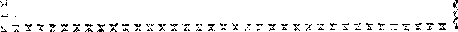
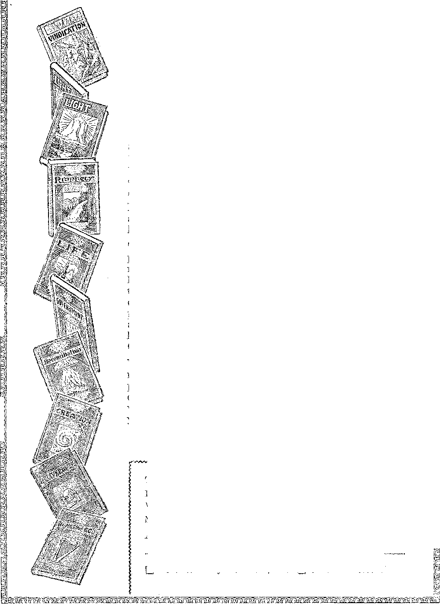

every other
WEDNESDAY
five cents el copy one dollar a year Canada & Foreign i.sy
Vol. XIII. No. 318'
November 25, 1931
LABOR AND ECONOMICS
Trans-Canada. Highway , . . 103
Air Mail Service Twenty
Million Idle in New York City . 104
Canada’s Pay to the Jobless . 104
New York’s $20,000,000
American Legion Surprises Smug 107
SOCIAL AND EDUCATIONAL
A Study of Man as a Gregarious Animal ...
The Long and Short of It . . 103
Radio Stations in Canadian
Needs of National Defense . . 105
Minister Made $2,500 on Side .
Why Truth on Aluminum Makes
MiSINSTRUCTION OF SCHOOL
Children . . . . . . . 108
Svi’OLT Gets a Job ..... 118
MANUFACTURING AND MINING
Coal in East Greenland . . . 103
FINANCE—COMMERCE—TRANSPORTATION
East Railway Time in Britain . 104
Four Males a Minute .... 195
Railroads Fighting for Life . 106
Barter Between Sweden and Persia
More Depression Relief
POLITICAL—DOMESTIC AND FOREIGN
673 Persons Run League
Conducting “Elections” in
The Breakdown of Law . . . 109 New Jersey’s State Police . .114
SCIENCE AND INVENTION
New Way to Ship Fruit . . . 103 ' Half-Hour Phonograph Disks . 104
The Silkworm Must Go ... 106
HOME AND HEALTH
Milk as Food for Soldiers . . 103 Slippery, Slippery Elm Bark . 119 “Where Aluminum Does All
the Cooking ......120
Prunes, Raisins and Senna Leaves 120
Potash vs. Common Salt . . . 121
travel and miscellany
Some Facts About China . . . 103 250,000 Drowned in Chu<a . .121
RELIGION and philosophy
On the Nature and Origin of Life 115 The Power of the Creator . . 122 Radio Witness Work .... 126
Severe Church Laws in Memeo 127
Published every other Wednesday at 11* Adams Street, Brooklyn, N. Y., IT. $. A., by WOODWOBTH, KNOIIR & MA1JTIN
Co/HO-iROrs and Proprietors Address: 111 Adams Street, 11 roolilyn, A. K, (7. S. A. CLAYTON J. WOOI>VrC-riTI-T. . Editor ItOBETFJ? J. MAI'TIN . . Business Manager NATHAN H. KNOElv. . Secretary and Treasurer
Five Cents a Copy—$1.00 a Year Make Remittances to THE GOLDEN AGE Notice to Subscribers: For your own safety, remit by postal, or express money order. We do not. as a rule, send acknowledgment of a renewal or a new subscription. Renewal blank (carrying notice of expiration) is sent with the journal one mon«h before the subscription expires. Change of address, when requested, may be expected to appear on address label within one month.
Published also in ‘Esperanto, Finnish, German, Japanese, Norwegian, Tollsl). Swedish, Offices in Other Countries
Erilish ........... .34 Craven Terrace, London, W. 2, England
Canadian...........40 Irwin Avenue. Toronto 5, Ontario. Canada
Australasian......7 Beresford Rd., Strathfield, N. S. W.. Australia
South African..........(.» Belie Street, Cii.ee Town, South Africa
Ibncred as second-class matter al Brooklyn, N, Y., under the Act of March 3, IhTO.
Volume XHI
Efc’cakiynj N„ Y.? Wednesday's November 25, 1931
Number 318
GREGARIOUS animals are those that habitually live or move in flocks or herds. Man is such an animal. It is not natural for men to live habitually solitary or alone. The life of a hermit does not appeal to most people. We involuntarily think there is something wrong with a hermit that he should wish to cut himself off from association with his fellows:
In the times in which we live, men and women, seem as never before bent on banding themselves together for every conceivable object under the sun. The old-style saloon vyas a sort of club of those who were especially fond of libation; but the modern night club, brought into being by the prohibition act. is all of that, and very much more.
It is said that the night clubs of New York offer the only picture in history of bejeweled society women and girls, thugs, blackmailers, demimondaines, college boys and visiting business men on a spree, reveling night after night under the same roof.
The night clubs of New York are really associations of criminals or the criminally minded. These night clubs are regular resorts of criminals who watch for women with jewelry or men with money and follow7 them when they leave and rob them or else blackmail them. As a matter of course, the managers of these night chibs are mostly men who have criminal records.
The high prices, music, dancing and eating and drinking carried on under the camouflage of exclusiveness are intended to draw into the clubs, and do draw into them in large numbers, those who come to New York “to see New York” and leave their morals behind them when they leave the old home towm for the big city.
Some, and perhaps all, of these night clubs have on their payrolls men whose business it is to beat into insensibility anyone who makes the mistake of visiting the club and fails to bring along enough money to pay the outrageous cover charges and assessments for refreshments. The New York papers often contain stories of men who have visited these night clubs and have received such treatment.
Thus a young Harvard student visited one of these places with his brother and wanted to leave at 2:30 in the morning. The two young men found that their total cash was but $16.00, whereas the check they were expected to pay was for $25.55. Offers were made to make up the difference by a check, leaving jewelry as security, but to no avail.
The custom ivhich is usually followed in such cases was followed in this. The soft-spoken manager approached the table and suggested that the young men step into another room so that the matter might be quietly adjusted. Once out of sight of the crowd, the two were so badly beaten by three men. who later disappeared, that one of them could not come into court the next day; but though one of these men did appear in court with his face badly bruised, the court dismissed the charge against the manager of the night club when it was admitted that he had taken no part in the assault.
In Brooklyn, two night clubs were refused certificates of incorporation by the supreme court on the ground that their names, “Wild Cats Social and Athletic Club” and “Midnight Steppers Social Club”, were not suitable names for membership corporations.
Law and Order Clubs
There are not as many clubs of those who have banded together to promote law and order as there are of those who are banded together to flout the law. Nevertheless there are those ■who are interested in seeing that something is done toward upholding the law. At Washington, the Thirty-Two Club, composed of senators, congressmen and other public officials, meets thirty-two times a year for breakfast and a game of golf. Meanwhile its members confer informally on important public questions.
Since 1904 New York city has had a committee of fourteen which has devoted its efforts toward the suppression of commercialized prostitution. This committee finds that the night clubs and speak-easies furnish an overwhelming majority of such cases.
Enfield, Conn., has an association for the detection of thieves and robbers. The Society has been in existence 105 years. When it was organized each member was required to keep a fast horse to give chase to thieves and robbers, and because that was the way thieves were caught a hundred years ago, the by-laws of the society remain the same as they were when it was founded. But now this society is, of course, merely a social institution, not greatly interested in the subject for which it was founded.
Missouri and other states in bygone years have had anti-horse-thief associations. At one time one of these associations had 45,000 members; but it no longer amounts to anything because, in the first place,'nobody has horses to steal; in the second place, nobody would steal them if they had; and in the third place, they would not know what to do with the horses after they stole them, the principal value of horses today being for “dried beef”.
Paris has an illegal association for the supposed rectification of legal sentences which appear to its members to be lax. In 1924, a certain Marquis Clement planned to ambush a Paris jeweler and shut him in a room into which chloroform was to have been pumped. The so-called “Knights of Themus”, who resented this and other robberies and swindles, buried this man Clement alive and placed a quantity of chocolate in the coffin in order to prolong his agonies. It seems incredible that men could do such a devilish tiling.
There are thousands of leagues and clubs of those who are interested in preventing crime at its source, that is, in keeping the boys from going bad. Everybody has heard of the Boy Scouts and other boys' clubs.
It is said that it costs $2,000 to arrest, try and incarcerate a criminal, and after he is incarcerated, it costs $400 a year in taxes to keep him in a jail or reformatory; while a boys’ club, which may keep many youngsters out of trouble, takes care of its members for $15 a year each.
In a district in New York surrounding a boys’ club building at 301 East 52d Street, it was found that in thirteen years the boy delinquency ratio
in this district became the second lowest of Th fifteen areas studied. It is said that of 154 men serving life sentences as habitual criminals, more than half were under twenty-one when. .....
caught and none had ever been members of boys’clubs.
Tn the borough of Manhattan, New York. .' within a five-year period, one-half of all the boys between the ages of ten and fifteen years will be registered on police blotters for some offense against law and order.
Boston has a boys’ club composed exclusively of newsboys. The club was founded by a lawyer, once a newsboy, who desired to help newsboys bridge the great gap that exists between the "
street life of the newsboy and the future responsibilities of a useful man.
Detroit has noticed a marked decrease in de- ~ linquency cases since it organized a boys’ club, w.“ in which attention is given to their teeth and they are provided with recreation and every ... sort of gamQ that boys like. Boys will travel together; and if they do not travel under good leadership they will travel under bad, and eventually get into trouble. Detroit, some years ago. led all the cities of the country in juvenile delinquency, but is now making good progress in the right direction.
Clubs for Mutual Improvement
Girls in Chicago, Philadelphia, Buffalo and other places have organized “slow” clubs as a protest against the speed and recklessness of the jazz age. The girls in these clubs will bo careful when and where and how often they bestow their kisses. It would be good for all the girls in the country to remember this and live up to the rules.
There are nearly a thousand women's clubs in the country that own their own homes, the value of their holdings being nearly, if not ..... quite, $20,000,000.
Liverpool lias a husbands’ club, the 500 mem-hers of which have banded together for the right to stay away from home until 11:00 o’clock in the evening. Jersey City has an.......
Alimony Club, which in the last fifteen years , has paid in more than $166,000 in fees. These '.........
fees, as prescribed by the court, are turned over to the wives of the members. New York has a similar alimony club.
There is an association of American university women formed for the purpose of promot-
ing the welfare and advancement of college women. The Illinois Women’s Athletic Club has a baby check room in which youngsters are _.....cared for while their mothers find rest in ath
letics and such other things as women do in ‘ athletic clubs.
The Garden Club of America, said to have several hundred thousand members of beautyloving women, is crusading against the billboards that will spoil and are spoiling our scenery.
There is a national association for middleaged employees, the object of which is to wipe out the rule against hiring men over forty.
The Kingsley Club of New York and Philadelphia is composed of stammerers. The purpose of the club is to correct stammering. At a recent meeting of the New York club, thirty members made speeches.
Paris has an Association of Kickers, the ob-jeet being that members should put up a vigorous complaint when prices appear to be too high.
The Sanzovay is a club, not of deaf people, but of people who are not deaf, who are interested in helping the deaf.
There is a club in Brooklyn, the Ship Model Makers Club, which boasts a membership of more than 1,000 engaged in that pursuit in many parts of the world.
..... ......Canada has an Amputation Club. This is an organization of men who lost arms and legs in the World War and seek to prevent the world from forgetting them.
It is said that in the United States alone there are 450,000 persons who have joined Jack London clubs to protest against the cruelties connected with animal training. There are also Jack London clubs in Canada, England, Holland, Switzerland and France.
White Bear, Minn., has the Sons of Wild Jackasses Club, with a. charter membership of 200, with the avowed purpose of “braying for the fair treatment of farmers”. The name of this club refers to a speech by Senator Moses of New Hampshire, in which farmers of the Northwest were called by this unusual title.
London has a crime club to which lawyers and detectives belong. There is a Buttons Club, made up of bellhops. The Sick and Sorry Club is for those who do not. feel well and want to tell somebody about it. There is also in London a Sighing Club, which lovers join and in which they can talk as much as they like about the objects of their affection. London also has a Split Farthing Club, which, in fact, is an association of misers.
Health Clubs, etc.
Germany has a Avalking club of 85,000 members that has in connection with it 2,300 tourists’ homes where lodging and breakfast can be had for a few cents. Germany also has, in Berlin, a Turnverein, or exercise club, exclusively for babies less than a year old. Here the youngest exercisers in the world range from five months to a year, are laid out on flannel-covered tables and put through setting up exercises with a view to correcting defects of the spine, which have been discovered in about one-fourth of the school children in Germany.
London has a Grandfathers’ Club of fifteen members who spend their annual two weeks’ vacation together. In the last party the oldest was eighty-four and the youngest seventy.
Montgomery County, Penna., has a club of 6,000 people, membership in which is limited to those persons who have dwelt for fifty years or more in that one county.
Coney Island, New York city, has a Polar Bear Club, consisting of robust citizens who bathe in the open in the Atlantic, the year round. Like the Germans of Caesar’s day, the Polar Bears take their morning swims even when they have to break the ice in order to get into the water.
The Cloud Club of New York is an organization of business men who procure their luncheons on the 66th, 67th and 68th floors of the Chrysler Building.
London has a Beefsteak Club, and there are many epicure clubs in all parts of the world. In the South, the colored people have watermelon clubs. The star performer in one of these watermelon clubs is said to have eaten three full-grown melons in six minutes.
There have been some well authenticated cases of suicide clubs of people who have tried to get well and have given up the fight.
Travel Clubs
We do not know what percentage of the owners of the 27,000,000 autos in the country are members of the American Automobile Association, but it would not surprise us if there were several millions. The National Geographic So-
ciety is really one great association of travelers. We have in New York city the Explorers Club, with a clubhouse on Cathedral Parkway worth $500,000.
The Early Birds is an association of aviators limited to those who participated in flights prior to 1916. The Caterpillar Club consists of more than 800 men who have jumped from airplanes in an emergency. This number is constantly growing. Another club of parachute jumpers is the Rip Cord Club.
The Pedestrians Association of London, with a membership in excess of 3,000, aims to reduce the motor risks of pedestrians by sponsoring bills for driving tests, speed limits, etc. The Stay Alive Club of America aims to lessen deaths and injuries by promoting safe and careful driving and walking on public streets and highways.
The Seven O'Clockers Club is composed of 200 Philadelphians who work in New York city. These men cover 180 miles a day. One of them has been making the trip from Philadelphia to New York daily for twenty-two years.
The Travelers Aid Societies are travel clubs, which last year looked after‘5,374 youthful runaways in the United States.
Clubs and More Clubs ■ •
The Army and Navy Club, the American Legion, the Veterans of Foreign Wars, the Rotarians, the Lions, Kiwanis and Elles are only a start. It is estimated that the number of members in American fraternal orders exceeds 23,000,000. Among the orders are those of Bears, Beavers, Blue Geese, Buffalo, Bucks, Camels, Cooties, Deer, Eagles (Red and Golden), Fleas, Goats, Larks, Monkeys, Moose, Mules, Orioles, Owls, Red Roosters, Reindeer, Serpents, Stags, Shrimps, White Rabbits, and White Rats.
The Blizzard men of 1888 have a club. These commemorate, once a year, the great storm of March 12 that completely tied up the business in New York city for three days.
There is a club in Hawaii of those who have driven a golf ball into the pit of Kilauea. .......i
Brooklyn has a Matrimonial Club; Bronx a Cartoonists Club. Harlem has the Civitas, " which provides for the advancement of the colored people.
New York has an exclusive club of the “Old Nineteen Waiters”. There are clubs named ..........
after nearly all the great men living and dead, writers’ clubs, chess clubs and music clubs.
Evanston, Ill., has a First Club. To be eligible, one must have been first in something or be descended from somebody who was first in something. The number of country clubs, athletic clubs, political and social service clubs is beyond computation.. All the churches are “Go .....A
to Heaven” clubs. All the financial institutions are financial clubs. All the governments arc..............
government clubs, and all the schools and colleges are educational clubs.
Perhaps the most exclusive club in the world is the Carlton Club of London. One who was otherwise eligible sometimes had to wait twenty.___________
years before he could obtain membership. However, the club is not as exclusive as it used to be. All these are finding it much harder to keep up their expenses than was formerly the case.
The biggest club of all, and one in which .......
everybody will be required to take out a life membership if he is going to have the blessing of everlasting life, is God’s Kingdom, and then the full operation of that kingdom will take the ...........
place of all or nearly all these other aggregations of humanity. In order to gain membership in that club, one not only must covenant to give all that he lias, but must give it, and in return he will get everything that is worth having.
^TNON'T beat me! Don’t beat me!” a prison-.
AM er in a jail at Washington, D. C., heard a fellow prisoner scream out as so-called “officers of the law" came to his cell and took him out for the third degree. The prisoner was gone an hour and a half. When he left he was sound in body. 'While he was gone thumping sounds
were heard which were accompanied by screams. When he was brought back his left eye was practically closed, and there was blood all over the front of his shirt. This was at the capital of the country, and one of many cases where prisoners have been beaten there, in the effort to force confessions. All this is entirely illegal.
25fiG0s000 Workless This Winter
IT IS estimated that the world total of unemployed will reach 25,000,000 during this coming winter. Of this number, 10,000,000 will be in the United States and 7,000,000 in Germany.
Carrying a Hull in Tennessee
TOTr.. H. E. Man, of Tennessee, every day car* -L’JL rjcs one hundred feet a bull calf -which is now one year old. He began carrying the calf the day it was born, and has never missed a day since. The calf now -weighs 800 pounds,
Some Facts About China
TN PEKING, in 1929, 91,000 women out of J- 518,000 had their feet bound. Children work in Chinese silk factories at the age of five. With a quarter of the world’s population, there are still only 7,000 miles of railway in China.
Milk as Food for Soldiers
SWITZERLAND has been trying out milk as a food for soldiers, and with the best of results. It was found that those who drank it were not ill, as was often the case when lemonade, beer or water were drunk.
404 Mites an Hour '
IN THE recent Schneider Trophy race Lieutenant G. H. Stainforth attained a speed of 404 miles an hour. This is about 600 feet a second, and is only about 200 feet a second short of the speed of a .45-calibre bullet fired from a Colt automatic pistol.
New Way to Ship Fruit
TTALIAN engineers have found a new way to ship ripe fruit. The cars, instead of being iced, are hermetically sealed and sprayed with a special carbon gas. It is claimed that this gas keeps the fruit fresh and preserves the perfume of costly flowers during long-distance shipment.
Pennsylvania One-Fourth Idle
HpHE Pennsylvania Planning Commission estimates that one-fourth of the workers of
Pennsylvania are without Jobs, that there are 900,000 unemployed in the state, and that almost, half of the 67 counties in the state are in distress. Many school districts have empty treasuries.
Hungary Near Bankruptcy
T> H. Posters, formerly of the Bank of England, after an examination of Hungary’s finances, declares that the only way out is for Budapest to declare a complete moratorium, which is merely another name for bankruptcy.
Trang- Canada Highway
HpHE trans-Canada highway will endeavor to absorb a large number of Canada’s unemployed. The workers will be housed in camps. They will be paid 30c an hour for an eight-hour day, from which will be deducted 80c a day for board and 50c a month for medical service.
Air Mail Service Twenty Years Old
IT SEEMS hard to believe that the first air mail service in the United States occurred twenty years ago; yet it is true that the first sack of mail was carried on September 23, 1911. It was only a five-mile ride, too. The mail was dropped from a plane instead of being brought down and deposited.
Air Transport Forging Ahead
IT IS noted in Europe that while the railway and passenger steamship business is seriously depressed, air transport is forging ahead. There is a growing confidence in the safety, comfort and convenience of air travel. Practically every convert to flying becomes a permanent user of the air lines.
Air Service Between Milwaukee and Detroit
A FINE illustration of what air service can accomplish is in the schedule of the Kohler line, which connects Milwaukee and Detroit in the flying time of 2 hours 40 minutes, whereas the fastest trains require 10 hours 40 minutes to make the trip, even when they have immediate connections at Chicago,
Coal in East Greenland
COAL has been discovered in East Greenland. It is in the territory recently occupied, by the Norwegians, but was discovered by a Dame. It is said to be of good quality. It is one more of the many proofs that prior to the Flood the entire earth was in a hothouse condition. For a full explanation of this see Judge Rutherford’s book Creation.
Human Baby as a Bear’s Cub
PARENTS in Thrace, near Istanbul, have just had restored to them a baby boy that for the past four years has been the captive of a mother bear. The baby was kidnaped by the bear while the mother was gathering firewood in a forest. When found, it was quite savage; but it is now back in its home.
Fast Hallway Time in Britain
THE Great Western Railway recently drew a train of six coaches, weighing 200 tons loaded, from Swindon to London, 77(4 niiles, in 59y2 minutes, or at an average speed of nearly 78 miles an hour. The regular running time of this train from Swindon to London is 67 minutes, or 69.3 miles an hour.
What a Few Men Could Do
IN THE year 1929 there were 504 individuals with incomes equal to the combined values of the nation’s entire wheat and cotton crops, and today there are four or five men any one of whom could buy every farm in the state of Wisconsin. In Washington’s day there was not a millionaire in the country.
Nearly a Million Idle in New York City
A RGUING- that the United States Census X.JL Bureau figures of unemployment in New York city are far beneath the facts, Edward C. Rybicki, director of the City Free Employment Agency, has macle a statement over the radio that the number is nearer a million, and how multitudes of these families exist at all is a mystery.
Papa Taylor Scolds Chattanooga
"D apa Taylor and Charlie Taylor are in the evangelist business and have been putting on a show at Chattanooga. It must have been a bad show, or else the times are hard, or something, because they, had expected to mop up about $1,000 a week and the people came across with onlj7 $100. Papa scolded something dreadful. He predicted that some of his audience would be in the bread line this winter and would find out what real suffering is; and then he added that if they would prosper and do well, they should give to the Lord and his work, meaning himself and Charlie, and they would be blessed tenfold.
Paris Gives Up Street Cars
A FTER much discussion and agitation Paris has finally decided to give up its street cars and depend for civic transportation entirely upon buses. Of the city’s nearly two hundred ' car lines thirty-four have been condemned, and the tracks of eleven are being removed and the streets repaved. The street car’s inability to dodge has made it no longer able to compete,.....-
Canada’s Pay to the Jobless
British Columbia’s rate of pay for the jobless is $2 a day, plus 85 cents a day for............
board, plus 80 cents a day for every man who has a family. Slightly higher allowances are paid to skilled workers and foremen. These allowances are not considered as wages, but as subsistence allowances to carry the unemployed through the emergency.
Estopping Gambling at Washington ......
THE courts made an effort to stop gambling......
at Washington. While they were engaged in this praiseworthy enterprise a church carnival was in full swing, with wheels of chance and.........
lotteries going and police on the ground to guarantee protection. Thou seest, brother, the________________
uses of the police in religion. Theirs is to do the . dirty work while the saints pocket the money. '
Costs of Worship at Garden Grove
THE Santa Ana (Calif.) Register has an......................
advertisement of the “'Church of the Foursquare Big Opening” at the new church home. It invites the public to come and hear a lady evangelist, and adds thoughtfully, “Sunday ........
School, 9. 45; morning worship, $10.45; Dedi-_______
cation Service, 7.30.” Just why the morning worship is so expensive as compared with the -other services is not stated. .....
Half-Hour Phonograph Disks
THE RCA-Victor Company has brought out .....
-4- a new phonograph disk which plays for half an hour, requiring manual attention only at the fifteen-minute mark. The speed of the turntable is slowed down from seventy-eight to thirty-three and one-third revolutions per minute and the number of grooves on the playing surface of the disk is almost doubled. It is anticipated that this new invention will give the phonograph business a new lease of life.
Tropical Valley in Canadian Northwest rpjIE oft-reported tropical valley of the Cana--L dian Northwest lias been definitely located, near the junction of the Racing and Toad rivers, about 400 miles northwest of Fort St. John. The valley is three quarters of a mile in length and is honeycombed with hot springs. The ground is so heated that during a temperature of 50° below zero water does not freeze in the valley.
Radio Stations in the Canadian Arctic
TIE Canadian Arctic is becoming dotted with radio stations. A string of them reaches all the way from Winnipeg to the head of Great Slave Lake, and another string all the way from Ottawa to Resolution Island at the Atlantic entrance to the Hudson Straits. In British Columbia all the principal canning, lumbering and mining industries have radio communication with their offices in Vancouver.
Four Miles a Minute
ajor James H. Doolittle, in a specially built plane, crossed the United States from coast to coast in 11 hours 1G minutes 10 seconds, and then returned from Newark to Cleveland in one hour and forty-six minutes. He left Burbank, California, at 5:35 a.m. and, after his trip across the continent, was back again in Cleveland at 7:35 p.m. In his flight across the continent he clipped 1 hour 8 minutes 53 seconds from the cross-continent record.
The Needs of National Defense
II /T/Cready Sykes, in Commerce and Finance, itJl gayS; “For national defense the United States needs an army and navy about as much as a householder in the suburbs needs an armored car. As a matter of fact, the private citizen in New York or Chicago is in far greater danger of physical violence at the hands of an aggressor than is the United States. For more than a century we have lived securely with. three thousand miles of undefended frontier between us and one of the dominions of one of the richest and most powerful empires in the world, between which and ourselves there have as a sober fact of history been more differences and conflicts of view than with any other country. Yet no one but a moron has lost any sleep because of the danger from our unguarded frontier,''
Causes of the Floods
THE great floods which have occurred this X year in China, India, the Philippines and throughout Africa are laid to unusual accumulations of ice in the Antarctic, which ice is now breaking up and driving the warmer waters before it. The waters off California this year are five degrees warmer than ever before known. It is anticipated that these conditions will bring about a great drought in Russia next year.
673 Persons Run League of Nations
HE personnel of the League of Nations is 673, all but 310 of whom are employed in the International Labor Office. There is a publicity department with 54 employees and a combined salary of $235,000. About $800,000 a year is expended for pamphlets, reports and other printing. The expenses of the forthcoming disarmament conference are estimated at $1,000,-000.
New York’s $20,000,000 Relief Bill
EVv YORK state has boosted personal income taxes 50 percent and put through .a $20,000,000 relief bill. Half of this amount is set aside for home relief and will be used entirely for food, shelter and clothing for the unemployed. Governor Roosevelt estimates from reports that have reached him that the number that will require help this corning winter will be about double the number of last winter.
Georgia Minister Made $2,500 on Side

GEORGIA minister made $2,500 on the side and now he is in trouble. It seems that he had a son, a sailor, whose life was insured in his favor. For once he had a brilliant idea. He obtained a leave of absence for the boy on the ground that his sister was dangerously ill, but she wasn’t. Then the boy was found slain with bullets which fit into the Reverend’s gun, and the dominie collected the $2,500. And now the police want to know why it is that the automobile tracks near the lad’s body are similar to tracks left by the minister’s automobile. The Reverend was just on the way to preach a sermon when he was arrested. The dominie business is certainly getting to be a hard business, and when one of them does make a few extra dollars there are so many curious people 'wanting to know all about how he got it.
The Silkworm Must Go
THE E. I. duPont de Nemours Company, of
Wilmington, announce that after much experimentation they have discovered a way to produce fibers that can be woven into goods, which fibers, they claim, have every quality that makes silk precious. Most important of all, this new process is wholly synthetic. Just now it is in the experimental stage, but if the claims made for it are true it marks the finish of the silkworm, and the end of the silk trade with the Orient. The silkworm must go; the chemist has made it impossible for him to live.
Smoke Screens Not Harmless
SEPTEMBER 30, in plain view7 of the office of The Golden Age, an airplane in the employ of a motion picture concern laid a smoke screen around the U. S. Navy dirigible Los Angeles. It was a beautiful sight to behold. The plane’s driver was told to keep far enough away from the dirigible that none of the particles of hydrochloric acid would drip on it. Somebody miscalculated what the acid would do farther down, as scores of automobile tops and hundreds of suits and dresses were ruined, holes being cut through them as with a knife.
Uncle Sain’s Divorced Wife ..............
XPx-Senatob Heelin of Alabama went to speak in Fresno, California, but the Catholic and
Protestant voodoo men of the city, terrorized at the possibility that somebody might learn something, prevailed upon the authorities to bar him from the high school auditorium. Heflin had to go over into the Japanese section of the city to get a hearing, and now somebody in Fresno, some mean man with a sense of humor, writes to us and wants to know if the Statue of Liberty is Uncle Sam’s divorced wife. How should we know? Why pick on us?
Barter Between Sweden and Persia \
THE breakdown of the gold standard is disclosed not only by its being deserted by nation after nation, but by the cases of barter on a large scale that are coining up. Not only has America bartered with Brazil, exchanging ivheat for coffee on a colossal scale, but Sweden has now entered into barter with Persia. Swedish engineers and Swedish rolling mills will ..........
build the Persian railway from the Caspian Sea to the Persian Gulf, and Sweden will take its pay in Persian goods, mostly staples, but with some rugs and pearls and silver included, no doubt.
Railroads Fighting Hard for Life
THE following is an extract from a filled-in form letter sent out June 16 over the signature of the president of the Lackawanna &, Wyoming Valley Railroad Company, P. J. Murphy. We do not blame Mr. Murphy a bit for this letter; every word that he says is true; but it is interesting also as showing how hard pressed the railroads are in their efforts to keep open the arteries of travel on which most of us at times depend.
We are advised by cheek made, that car [automobile] bearing Pennsylvania license 5841J1 picked up 2 prospective passengers waiting at our River Street station, Wilkes-Barre at 11:00 PM on June 14, 1931, This is a rather bad practice; it is injurious to the company and to the people who patronize the road, because if other automobilists do the same thing there would be a decrease in revenue to such an extent that service might be discontinued; then the public who are compelled to use the railroad at times when automobiles are not around would be injured very materially. Furthermore, automobile drivers who pick up people become liable for any accident that might occur while people are traveling with them. In all, the practice is very bad and should be discontinued.
Conducting “Elections” in Hungary
IN THE United States one may freely vote for either of the two capitalistic parties, but in Hungary there is but one such party. It is the government party itself, and if you do not vote for it you are out of luck. Those voting against the government must vote in blocks of twenty. Those who have received government assistance within the year may not vote at all. While on the march from their meeting place to the voting place the police may arrest one or many of the marchers. That breaks up the voting block and the rest must return to their meeting place until they have another block of twenty. Arrived at the place of voting the opposition voters are shouted at like so many cattle. Whenever they feel like it the government officials close the polls, and they generally dose them after the government vote is all in, and while the opposition parties are still trying to get together their blocks of twenty. At every polling place the government forces always win. If there is no other way to win, the figures are “adjusted” until they suit. These items are taken from a current article in The Nation,

What the Dole Is
BRITISH worker, when employed, must contribute 14c a week to the unemployment fund, his employer must put in 16c, and the state puts in 15c. The worker, when unemployed, receives $4.25 per week for himself, $2.25 for his wife, and 50c for each child. The dole is the only thing that stands between 2,714,359 English men and women and starvation, and one British statesman said of it last winter that “if it were not for the dole, half the financiers in the ‘city’ would have been hanging from the lamp posts before this.”
Electromagnetic Preservation of Food
obert Pape, of Soest, Holland, has discovered that within a radius of 20 meters from
: an apparatus which generates short waves in
the region of 25 centimeters to one meter an ■ electromagnetic field is set up within which food does not decay in any atmosphere or tempera-w' ture. New potatoes, eggs, milk, pears and ■ " shrimps a year old are perfectly preserved. This food-preserving field of 30,000 cubic meters ■ . uses up only as much electricity as an ordinary
200-candIe-power electric bulb. The invention will completely transform the cold storage business. The preserving action penetrates every. thing, stone walls, iron, wood, glass, indoors and out,'within a20-meter radius of the machine.
' American Legion Surprises ike Smug
...........]Qobeiit Whitaker, in The American Guardian, says: “It is a time of economic twilight now, and the chickens which were hatched out in the incubators of the war hysteria are eom-fug home to roost. Big Business stands aghast that the war veterans are not content with compliments, but want jobs, and want bonus payments, and are organized on a big enough scale to get what they want, even though Big Business holds up holy hands of horror that the fine patriotism which carried the boys into the trenches, and left a lot of them there, will not feed and clothe and house those that have returned and the relatives and dependents of ■ those who made the supreme sacrifice. And the preachers and church peoples who have joined the legionnaires in the anti-radical hysterias promoted by the predatory interests throughout '• the post-war period, with the assistance of these professionally pious ones, are scandalized that the legionnaires are fighting prohibition.”
Noncombatants in the Next War
r. Cadman, Rabbi Wise and forty-six other prominent churchmen who are too old to be drafted have sent word to our Quaker president, and to the United States Congress, that they will not perform any kind of combatant service in the next war. In the first place, they would not be asked to do it, because they are all too old to be of any good as soldiers; and, in the second place, there will be plenty of less dangerous work similar to what they did before, such as recruiting, Red Cross, Y.M.C.A. base duty, etc., into which jobs they will fit as easily as a duck’s foot fits in the mud.
Why Truth on Aluminum Makes Slow Headway
OME have wondered why the truth about aluminum cooking utensils, as it has been repeatedly published in our columns, seems to make such relatively slow progress in convincing the rest of the world. Here is an item that helps to clear it up. It is reprinted from the Prairie Press Farmer:
THE ALUMINUM GRAFT
Some time ago a “news release” was sent out from the North Dakota Agricultural College, stating that aluminum cooking utensils were perfectly safe and that there was no danger of poison. This release was published in the small-town weeklies throughout the state. .
Investigation has shown that the big trusts are deluging the press with “news releases” and “canned editorials” and boasts of the amount of free space for the trusts. One of their agents declared that country editors are “God’s fools”.
Every week there comes to our desk one of these “news releases” from a news distributing service, run by E. M. Hofer & Sons, Portland, Oregon, and, as usual, boosting the big power trusts and knocking public ownership.
In the Federal Trade Commission’s investigation it was found that the power corporations had been secretly giving $84,000 a year to the above-mentioned E. M, Hofer & Sons.
The Hofer service, distributed free to 14,000 newspapers throughout the country, is a disgraceful fraud and cheat perpetrated upon the editors and newspaper readers of the country, and the recent case of the North Dakota Agricultural College, denying that aluminum cooking utensils are poisonous, shows that they arc not without dirty hands; but what does a life mean to some college professors as long as they can fill their coffers?
More Depression Relief Cooperation By Dr, B. H. Jones (Pennsylvania)
WILL some mathematician explain just what is the difference in principle between the utilities company’s service charges against the small users of gas, water, and electric current, and the $1 monthly service charge of the National Bankers Association against the small depositor whose monthly balance is less than $100? ‘
To be sure, "infant industries” always had to be favored, and now that banks and railroads are in the infant business class they should be protected against departmental loss even if the man with less than $100 must donate 12 percent to 24 percent of his all to those who have nine-tenths of the nation’s cash outside of government vaults.
Government, municipal, state, national, and other full-grown enterprises transfer funds from one department to another to provide and care for just such deficiencies. However, doubtless the banks need the few extra dollars of the small depositor, to stack up in their already over-filled vaults, to save the crumbling banking and financial system of the country’ from total collapse.
Senator Couzens’ suggestion, that "capitalism ought to clean its house”, is well supplemented in “The Soliloquy of a Wyoming Banker”, as we read in The Golden Age of June 24. And these tw’o bring to mind and fairly clinch what Henry Ford wrote, for the Forum magazine, about two years ago. In substance, he said: “Anything not on a sound basis must fall.” And, in the same paragraph, but several sentences after, “Our financial system is not on a sound foundation.” Will the White House Engineer succeed in clearing the way? for rebuilding? Will he lead the way, forgive and forget, by? rescinding, and cause the rescinding of all war debts, and lay a sound foundation for all countries ?
Misinstrnction of School Children
use of vaccines and their value may? be illustrated in connection with smallpox. Dr. Edward Jenner, an English physician, in 1799 found that persons who were vaccinated did not take smallpox.
The Taxpayers and Voters League of Chicago has made an attempt to bring the Chicago Board of Education to its senses, and to prevent the American Medical Association in its headlong course of forcing its stuff into the heads and into the bodies of all the young regardless of whether or not there is a particle of truth in their claims or a particle of justice in their methods.
On the very same page in which this ill-concealed fake advertising for the doctors appears is a sample advertisement of a quack doctor, and beneath it comes up for air the statement, "A reputable doctor does not advertise in this way; his reputation spreads through his service to mankind!”
Dr. Werner, chiropractor, of Brooklyn, who broadcasts regularly over WBBR ’when he is not in jail, is just out after six months’ free board for allegedly practicing medicine without a license. It is these high-minded men who do not advertise that locked up this useful man because he tells the truth and because he really helps ailing people to get well.
IT IS too bad that taxpayers have to pay? for the printing of textbooks that teach things that are not true, and then have to pay? teachers to teach the untrue things the books contain, and, on top of that, have to pay for the vaccines advertised, and pay for the rest of their lives in the lessened vitality of their children.
Everyday Problems in Science, written by Pieper and Beauchamp, and published by Scott, Foresman & Co., of New York and Chicago, is a school textbook used in the first year of high school. On page 222 this textbook contains the following misinformation:
You should realize, also, the value of depending on the doctor and the dentist even when you are well. By regular examinations these trained experts may? save you days of suffering’. How the doctor determines ■what help the body? needs in case of sickness, and what medicine, if any, should be given, is too difficult for us to understand at, this time. Immunity is aided by? vaccines and antitoxins. Rest, good air, exercise, proper diet and medicines are not, the only means of helping the body? fight disease germs. There are two other important way?s -which may be used to assist the white corpuscles and the chemical substances vzithin the body? in their fight against germs. Thus, certain vaccines and antitoxic sera may be injected into the body? to strengthen or reinforce the army of disease fighters and to make the body? immune. The ’ 108
The tM-eakdown of Law By Dr. Edward M.. Perdue (Missouri}
[Reprinted from Journal of the American
OUR nation is facing a serious crisis. Great numbers of our best people do not seem to realize this. Many others, men of conservative .....:......thought and well-balanced insight, speak of it with bated breath. They say that the time of : revolution will not be postponed long. Never
' in the history of our country has there been such a surfeit of politicians and such a dearth .......of statesmen. .
■ The physicians of our country have the confi-: dence of their people. The practice of medicine
f is hard hit by conditions. The great mass of our .....■.....profession pay very little attention to politics and submit with fortitude and patience to eco-....... uomic stress. But we have a responsibility.
• Our people are out of work. There is poverty
and want in the midst of plenty. Business is v stagnant. Capital dares not engage in business.
" The millions stored in banks cannot be used.
• Wliy? .
.... Organized graft and racketeering, legalized graft and racketeering, graft enforced by forms ■....... of law, the cooperation of the officials of gov-
id eminent with the grafters and racketeers, have - made the overhead so great that business is paralyzed. Our oppressed people are cowed and
; humiliated. Every attempt at relief through ' constituted authority is crushed by rebuff and . added burden. Among the most arrogant and i grinding in this oppression is a national or: ganization within our own profession.
Unless there is relief, and that speedily, our country will be swept by revolution. Let us hope and pray that this revolution be only ■ political. But such are the conditions that a
' powerful leader can sweep this country with
'i..... fire and sword, with shot and shell. Deliver us
: from such a cataclysm.
: Fifty years ago we were taught in high school
■ and college that the Government of the United
1 States was a republic founded upon the prin-
: ciples of democracy. Instructors, lawyers and
i judges spoke with respect and reverence of the j Declaration of Independence, the Bill of Rights t and the Constitution of the United States. The : addresses of Patrick Henry, of Daniel Webster
: and of Abraham Lincoln were printed in our
; school readers. The opinions of John Marshall were quoted as fundamental law. We were ' taught respect for law. We grew up patriotic and loved our country.
In those now almost forgotten days the citi-
Association for Medico-Pliysical Pesearch}
zen of the United States was entitled to the equal protection of the law. Freedom of speech and of the press were guaranteed. No man could be arrested without a warrant. No home or place of business could be invaded by police or sheriff without a search warrant under bond. The citizen could not be deprived of life, liberty or property without “due process of law”. This meant trial by jury before a court of competent jurisdiction, with power to summon witnesses, to compel their testimony, and to punish for contempt.
Today all these matters are obsolete. Our government has deteriorated into an administrative despotism, the most despotic, criminal and corrupt of all the governments of the so-called civilized world. Our governments both state and national are administered strictly upon the principles of graft. The individual or the business which does not or cannot “pay off” loses in any proceeding. The “Bill of Rights” is a joke. The Constitution of the United States is a “scrap of paper”.
In order to facilitate the collection of graft and to give it a legal status, the Congress of the United States has passed laws creating various boards, commissions and bureaus, granting them great powers with no legal restraint or accountability and with no trial by jury. Among these laws are the Pure Food and Drugs Act, the Volstead Act, the creation of the Federal Trade Commission, the creation of the Interstate Commerce Commission, the Federal Radio Commission, the Farm Board, and many others. The state legislatures have created highway commissions, school commissions, health boards, employees’ compensation commissions, public utilities commissions, and many others. All these commissions have been created for the purpose of facilitating the collection of graft and avoiding trial by jury. Appeals from their decisions are by certiorari and do not grant a trial de novo.
These various boards and commissions are in close affiliation with certain private or extra-governmental organizations which cooperate with them in the collection of graft. These organizations enjoy the favor of the public press and through the press conduct that other menace to American law and liberty, that is, government by propaganda and not by law. Two conspicuous extra-governmental organizations in our country, organized, conducted and financed by graft, are the Better Business bureaus and the American Medical Association.
The National Better Business Bureau has its headquarters in New York city, with branches in all the larger cities of the United States. Its graft has become so burdensome that the business houses of New York have organized a protective association to counteract its racketeering.
The American Medical Association has its headquarters in Chicago, with subsidiaries in every state and in a vast majority of the counties in the United States. It is credited with being the best organized and most powerful extra-governmental grafting organization in the United States. In its graft it is directly affiliated with the national government. It controls the United States Public Health Service, the health departments of the army and navy, the narcotic division, the bureau of chemistry, and the fraud order office of the Post Office Department. In the states it controls medical education, medical licensure, school inspection, and all public hospitals. In large measure it is affiliated with the Federal Radio Commission in the exacting of graft.
The very sources of justice have been corrupted. Did you ever visit a district court of the United States? To persons accustomed to the decencies and amenities of life, a visit to the district court of the United States will be a shock. But if he will visit the Moulin Rouge, Le Chat Noir, and the haunts of the Apaches in Paris, and then go with Kipling to Suez, Port Said, Aden and Singapore, then come back and attend the night court in the Lower Bast Side in New’ Y7ork, make a tour of Chinatown in San Francisco and of the West Side in Chicago, he will be prepared in a measure for the further descent into the District Court of the United States. Facilis descensus Averno.
The officials, including the judge, the frequenters and the audience, smoke cigarettes until the atmosphere of the court room is a cloudy haze. The court room, halls and corridors are filled ’with bootleggers, racketeers, hijackers, deputy marshals, come-on men, snoopers, procurers, under-cover men, inspectors, assistant district attorneys, stool pigeons, perjurers, decoys, demimondaines, and all that ruck of the underworld that are supposed to add dignity to our federal courts. In this court the most serious offense is to be a law-abiding citizen of the United States.
Three of these great grafting institutions keep a special watch upon the business of the country, the Better Business bureau, the American Medical Association and the Federal Trade Commission. When a business seems to be successful and prosperous and able to pay off, it is approached by the Better Business bureau. If it refuses to pay off, the Better Business bureau issues a printed pamphlet denouncing the business as a fraud and sends this pamphlet to affiliated Better Business bureaus in all the large cities of the United States and to the press. Letters are sent to the newspapers and magazines warning them not to accept the advertising of the proscribed business. Often libelous pretended biographies of the officers and representatives of these business concerns are added to the propaganda. If this pressure does not succeed in compelling the proscribed business to pay off to the Better Business bureau, the matter is turned over to the Federal Trade Commission.
The Federal Trade Commission issues a citation to the business organization to come to Washington to show cause why an order to “cease and desist” business should not be issued by the Commission. This is merely a suggestion to pay off. The Commission suggests that the'matter can be arranged “by stipulation”. They may even send a copy of their last annual report, calling attention to the hundreds of cases settled by “stipulation”. But they never state how much, or how they divided the swag, or how much, if any, they turned into the treasury of the United States.
If the prospective victim decides to settle “by stipulation” and sends in $25,000, a very satisfactory stipulation can be written. There are five commissioners. If one or two hundred cases are settled “by stipulation” in a year, this nets quite a tidy sum. The racketeering practices of the Better Business bureau are enforced by a form of law.
If the business cited is refractory and insists on a hearing, there is no amount of evidence that wall avail anything. The most complete and sweeping proof that a business is honest, fair and wholly lawful amounts to nothing lie-fore the Commission in default of the “pay off”. The record is useful only on appeal to the court above. Property is confiscated and the business
ruined without a trial by jury and without compensation.
If a pharmaceutical manufacturer, a great drug firm, an organization of physicians, a hospital, or any other organization having a medical tendency or purpose, fails to get permission to operate from the American Medical Association, that is, does not “pay off” to North Dearborn Street, Chicago, the matter is turned over to the Federal Trade Commission. The same procedure follows. Citation, pay off, or trial with the inevitable adverse decision.
• The above statements are mild. For real vigorous language in the statement of the case, we quote the opinion of the United States Circuit Court of Appeals, Sixth Circuit, No. 5429, filed June 28, 1930, entitled “The Marmola Case”. '
The record here shows, without dispute or by implication which would hardly be denied, that the American Medical Association is engaged in a campaign against those proprietary remedies which it believes ought to be used by the public cither not at all or only under supervision. It lias a bureau for that and other purposes, and the bureau employs a director. When it is thought that a particular advertisement should be stopped, this director takes the matter up with the Commission and with the association of “Better Business Bureaus” which are scattered over the country. Thereupon, the Commission, if it approves, files a complaint and eventually, if it is convinced of the truth of its complaint, makes the order to desist and refrain. The Better Business bureaus explain to their local newspapers and to the general periodicals, that it would be wise to refuse this advertising. The chairman of the Commission, iu public addresses, and in correspondence, advises die newspapers that they will be subject to prosecution by the Commission as defendants, to be joined with the advertisers, if they do not desist from such publications; and the newspapers may suspect that if they do not comply with the advice of the Better Business bureaus, their general advertising patronage from the membership of these bureaus will fall off. It appears that these methods of influence, carried on in this case before this cross suit for enforcement was commenced and while it has been pending, have destroyed a large part of petitioner’s business through refusal to accept this advertisement, and only the injunction of this court is needed to make the elimination complete. ■
It will be noted that tins most nefarious, most vicious and far-reaching combination is against the practices of medicine and pharmacy. We, as physicians, are vitally concerned and largely responsible, for we have permitted this octopus to grow in our midst until it threatens to strangle our very life. It is up to us to clean house in our own profession. The condition has become so rotten and so vile that the house-cleaning devolves upon us. The rest of the world has abandoned us to our fate and turned to other sources of relief. Heaven revolts at the corruption. We must do the work. Our prayers are not answered, for the gates of Heaven are closed to keep out the stench of Fishbrine.
It is much easier and safer to frame some inoffensive, unoffending, law-abiding citizen than it is to apprehend and prosecute a gangarmed with machine guns. So when business is dull and publicity is lacking, and it seems necessary to get on the front page, the United States district attorney calls in two assistants, a half dozen inspectors and a gang of stool pigeons, procurers, decoys and perjurers and proceeds to frame some law-abiding citizen. The higher the standing and character of the accused, the greater the publicity. Pictures in the papers, long accounts of the trial and sensational but false accusations furnish the necessary thrill. A law-abiding citizen of the United States is convicted and sentenced to the penitentiary to the scandal of the community, while gangsters run wild, bootleggers and racketeers flourish and murder and rapine go unpunished.
The last few years furnish many concrete examples of the utter break-down of law in our country. Of late we read much about the Fall case. Several years ago Fall and Doheny were indicted about a $100,000 bribe. Doheny was accused of giving the bribe, and Fall of accepting it. On trial Doheny was acquitted by a jury. Now the acceptance of a bribe is dependent upon a bribe’s being given. If a bribe is not given, it cannot be accepted. To any judge or lawyer with any judicial acumen and with sufficient horse sense to come in out of the rain, the acquittal of Doheny should have worked an automatic dismissal of the charge against Fall. Yet Fall was tried by politics rather than by law, was convicted of receiving a bribe that was not given, and has been sent to the penitentiary. Is it any wonder that our boasted United States is the-joke of the civilized world? ,
For ten years Al Capone and his organization have been shipping alcohol and other intoxicating liquors by the carload throughout the length and breadth of the United States. Federal agents have ridden these trains, followed this liquor to its destination, supervised its distribution and collected their divide of the profits. Recently it was decided that Capone was to be prosecuted. Popular clamor was so great that it had to be done. With all this information, he was only sued for his income tax! Recent reports indicate that the Federal authorities are unable to locate the Capone millions and cannot collect the income tax. While Capone was supposed to be in the federal penitentiary at Leavenworth, Kansas, he and one hundred of his friends, the gentlemen in Tuxedos and the ladies in evening gowns, invaded the banquet hall in a hotel in Benton Harbor, Michigan, where some sorority was holding a banquet, took possession of the hall, crowded out the sorority and forced them to seek smaller quarters.
A few days later Capone appeared with counsel before the judge of the district court of the United States in Chicago. His counsel had bought the attorney general of the United States and the district attorney in Chicago. They presented an agreement that Capone should plead guilty to some of the minor charges and receive a short-time sentence and a light fine. But they had overlooked an important matter. They had not “seen” the judge who had the last word. When the agreement was presented to him, his indignation was something wonderful to behold. With gavel, judicial dignity and official denunciation, he humbled counsel and Capone and his counsel and made them doubly conscious of their oversight and lack of consideration of the dignity of his court. They withdrew the plea and took a continuance of a month or two. This 'will give them ample time to “see” the judge. $25,000 to $50,000 will be a wonderful prop to judicial dignity.
Last year while the Federal Radio Commission was indulging its orgy of corruption and its attempted graft in Kansas, affairs were very quiet in the federal district court at Kansas City, Kansas. It was decided to secure some publicity, so a quiet officer in the medical service of the United States Army, a certain Major Shepherd, was selected as the victim. He was framed out of whole cloth. After weeks of trial, front page stuff, crowded court rooms, pictures in the papers, scandal and salacious stuff sufficient to satiate the crowds of ladies who attended the trial, he was convicted of murdering his wife and sentenced to the penitentiary for life. The Government did not even prove the corpus delicti. The two facts proven beyond question were that the Government of the United States maintained at Fort Riley a Post bootlegger and a Post gold digger.
A vast system of Government graft which has extended over a number of years is just reaching its consummation. The scheme covers three major operations, the development of Florida lands, the development of the Rio Grande valley7 and the building of the Bagnell dam. All were undertaken by private enterprise with private capital. They were risky7; the outcome was problematical. In each case the business arrived at an impasse. There was question of success. This juncture in each case was being anticipated by7 the office of the attorney general of the United States and by his assistant district attorneys. Other private capital was associated with the attorney general in the scheme. At this juncture in each case, federal investigations, and prosecutions were instituted for the purpose of shaking public confidence, causing a panic of shareholders, the depreciation of the values of securities, and driving the concerns into bankruptcy and receiverships. .When conditions were at their worst in each case, the other financial concerns which were “in on.” the scheme came in and bought up the depreciated stocks and bonds, got control of the lands and improvements already made for a fraction of their original cost, added their own capital and brought them to completion. Millions were lost to the original promoters and their investors. In each case the steal was gigantic. It was all accomplished by the forms of law. It could not have been done without the cooperation of the Department of Justice of the Government of the United States. The divide or rake-off of the Department of Justice has never been determined. The last of these schemes to be consummated is the Bagnell dam in Missouri. This was accomplished by the district attorney in Kansas City, in engineering the wrecking of the Land Bank at Kansas City.
During the past year the Federal Radio Commission has indulged in an orgy of legalized graft. By law it is granted the unconstitutional power of refusing the use of the air. Intoxicated with this power, it inaugurated and prosecuted a regime of confiscation and oppression unparalleled in the history of this country7 and without precedent in the civilized world. Independent radio broadcasting stations not belonging to the “radio trust” vrere cited to show cause
why they should not be denied a renewal of their license. Besides numerous minor eases, there have been two very conspicuous cases, and a third is now pending. The two conspicuous cases are notable from the fact that they were partly owned by physicians or were asso-...... dated with large and important hospitals not affiliated with the American Medical Association. These two hospitals were progressive and successful and supplied a great and popular need. But they would not pay off, first, to the American Medical Association and, second, ^to " the Federal Radio Commission.
_........The first of these broadcasting stations to be
cited was the station at Milford, Geary county, Kansas. It was owned, controlled and operated
....... by a company in which Dr. John R. Brinkley - was prominent. Dr. Brinkley is a surgeon of J............splendid education and of superior ability. He
g incurred the enmity of the American Medical ..... Association. .His station was of 5,000 watts power, and was the most popular in the United States. Its programs were educational, refined, chaste and religious. A station owned and operated by the Kansas City Star at Kansas City, Mo., had 1000 watts power. The Star determined to put the Milford station out of business. The Star and the American Medical Association
J., procured the Federal Radio Commission to issue a citation against the Milford station. It A v>7ould not pay off, and went to trial. The affidavits offered before the Federal Radio Commission in Washington in May, 1930, went into ___ the record as prepared and offered by the Kan-J sas City Star. They were proven false. The defense was overwhelming in character and in ■ numbers of witnesses and affidavits. But the necessary $25,000 was not forthcoming. The station was denied its license. Then the Radio Commission decided to punish the state of Kansas for its defense of Dr. Brinkley and of the favorite radio station of the state, by denying the signature and wave length of the Milford sta-lion to Kansas. The legislature of Kansas i arose in open, unanimous revolt and instructed j...... the governor to use the utmost power of the
state to keep the station in Kansas. So the governor sent the entire congressional representai tion of Kansas, the senators and the vice-president to President Hoover demanding that their ! favorite radio station be left in their state.
At the direction of one of the Kansas congressmen, thousands of letters were sent to President Hoover. The writer sent one of these let-■f’.....
tens and has the copy and the reply on file. The Federal Radio Commission was compelled to leave the Milford station in Kansas, but deprived Dr. Brinkley of its use. The people of Kansas arose in political revolt. At the November election Senator Henry J. Allen, who did not support Dr. Brinkley, was defeated. Dr. Brinkley was elected governor of Kansas by a large plurality but was counted out by the constituted authorities sworn to enforce the law. The suffrage of the citizen is one of the most sacred rights. The people of Kansas are impatient of oppression and are still in open political revolt.
The second hospital radio station to come under the ban is KTNT, of Muscatine, Iowa. It was a very popular station, and was denied its license because of the opposition of the American Medical Association. The hospital is one of the largest and most successful in the treatment of cancer. The radio station was very popular, next to the Milford station the most popular in the middle west. But it did not belong to the radio trust and would not pay off to the American Medical Association or to the Federal Radio Commission.
The station at Shreveport, Louisiana, is now under the threats of the Federal Radio Commission. Thus far it has not paid off. It is a veiw popular station and is operated in the interest of the public. It has been very independent, and would have been put off the air long ago if it had not had the solid support of the congressional representation from Louisiana.
Radio stations costing $100.00!) to $150,000 have been confiscated without trial by court or jury, without any process of condemnation or compensation. A radio station can be used for only one purpose. Deprived of the right to use the air, the finest radio station is a pi Ie of junk. Yet these outrages and corrupt practices have become commonplace. The action of the Federal Radio Commission amounts to confiscation of the radio receiving sets in our homes. There are still some homes of education, refinement and culture. Some of these homes have children and young people whose minds should not be debauched by the vile stuff now sent over the radio with the approval of the Radio Commission. They say, “Yon don’t have to listen; shut off your radio.” We do shut it off, but would like at limes to listen to something beautiful, chaste and refined. As it is, most of the time is taken up with the advertising of corn salve. tooth paste, cigarettes and home brew, interspersed with jazz and a species of variety show that would be hissed off the stage in the Bowery.
This recital of concrete cases might go on indefinitely. But this is enough. Our legislatures have failed us. Oklahoma and Texas are the only states having a governor. Congress has failed us; our president has failed us. The officials of our government and the extra-governmental agencies in league with them roll and wallow in an orgy of graft and corruption, lawlessness and crime unequaled in the history of the world. In their bacchanalia of crime, the fingers of a man’s hand have already appeared, the “Mene, mene, tekel upharsin” has been written, but they ignore the interpretation. The dog has returned to his vomit and the sow to her wallowing in the mire. The presidents of Peru, Argentina, Brazil and Chile have gone into exile and have been lucky to escape the blank wall and the firing squad for infinitely less than the people of the United States have endured with their proverbial patience.
Added to the complete breakdown of the law, our country, the richest in the world is in great economic distress. In our governments, state and national, politics and graft have replaced
economy and statesmanship. In the present'.....-
state of stress and unrest, our politicians are not considering economic relief and stabilization and the reestablishing of respect for law.----------
They7 are only considering their prospects of , reelection. Our national officials sit in their : chairs at Washington seemingly unconscious that they* are sitting on a volcano, that the country7 is on the brink of a revolution. While the . wheat of Kansas is piled on the ground, and -the oil of Oklahoma and Texas runs to waste, h
miners at Henrietta, Oklahoma, raid the stores .....l
for bread. It is but a step from rioting to ipv- .:isolation.
Our country needs some leaders. The present occasion is the time of opportunity for th© -exercise of impartial and competent statesmanship. We have the richest and most progressive country in the world as far as material things are concerned. We have the most corrupt and lawless country’ in the world... Hava.........
we no Hercules who can clean these Augean : stables’? __
The call for leadership is very great. Our ■ present leaders have failed us utterly. The Bill ■
of Rights is a joke, the Constitution of the United States is a “scrap of paper”. Who shall 7 deliver us from the body of this death? ..........
New Jersey’s
HpHAT was a peculiar incident that happened x in Newark, N. J., the other day, when six kegs of beer intended for consumption at the recent Atlantic City convention of the State Patrolmen’s Benevolent Association were seized by7 federal agents and the state police had to go without their beer. Just before the beer was seized a New Jersey state cop who had been guarding it disappeared, When, before, did a Jersey cop ever desert a load of beer?
That incident down at Camden was different. There the Nev,7 Jersey cops actually held up a truckload of beer intended for Pennsylvania, not because they wanted the beer, for they had plenty of that, but because Philadelphia cops had tried to get the beer through the sovereign slate of New Jersey without letting the patrolmen of the Garden State get their regular rake-off.
The Camden discourtesies can be overlooked, for there is a possible element of jealousy involved; but what is the reason, at this late day, after state and federal officers have pulled to-
State Police
gether so beautifully7 in getting beer across the state of New Jersey, that there should be a falling out over so few as six kegs, when thousands of heavy trucks have gone through O.K.?
It may7 be that the Jersey police forgot to sec their brethren of the law enforcement higher up, or it may be that the federal men were unwilling that the beer should be drunk as publicly as it would have been at Atlantic City, or they7 may only have been playing a rough joke on the guardians of New Jersey, or, but perish the thought I some honest man may have squeezed into the ranks of one or the other and given the whole thing a black eye. But if the regular, gang ever finds out who it is he will get the works. -
(The other day’ federal agents closed up a place within a block of our printing plant. It was closed two days, possibly three, but is now running full blast, the same as usual. Probably, meantime, the right man has been seen, and the whole thing has been fixed up.)
On the Nature and Origin of Life By G. Lester Lance (California
THE genesis of life on our planet is often called “the greatest of the unsolved problems confronting man”. Indeed we are given to understand that the problem is incapable of solution. An eminent scientist declares that “as for the origin of life we know nothing whatever. Speculation about it is more or less futile.” Another remarks that “biologists are, at the present time, absolutely unable, and probably will be for all time unable, to obtain empirical evidence on any of the crucial questions relating to the origin of life”. While upon these points there is a divergence of opinion, an inquiry into the various theories respecting the origin of life opens many avenues of thought and matters of peculiar interest. Such an investigation may not enrich our knowledge to any great extent, but it may serve to impress the mind with the fact that leading men in the world of science today do not have a monopoly of, or even an intimate acquaintance with, all the facts of Nature as some of their learned treatises imply.
The mystery of the origin of life is no greater than the phenomena of life itself. The problem of life-genesis can hardly be considered apart from the question, What is life"? Supposedly this is a question for the biologist. Many definitions have been given, but none have proved quite satisfactory. Life has been defined as “the sum of the functions that resist death”. Spencers definition, familiar to all biologists, is that ........“life is the definite combination of heterogeneous changes, both simultaneous and successive, coordinated into correspondence with external coexistences and sequences”. Again, life is said to be “a series of definite and successive changes, both of structure and composition, which take place within an individual without destroying its identity”. These definitions are extremely interesting and give a working basis for further thought and study, but they are far from satisfactory. While a definition in terms so precise that it can be used as an invariable criterion is desirable, to state one thus is a problem of considerable difficulty.
Life is generally defined by modern biologists by its effects and in terms of mechanical or chemical principles. But no complete mechanization of biological phenomena is possible, and all mechanico-chemical explanations of living processes are bound to prove extremely unsatisfactory.
It may be pointed out that the mechanistic ■ . u theory of life is inadequate in many particulars. One instance often mentioned is in regard to locomotion. If you wind up a child’s toy automobile and set it going toward a wall, it will strike the wall and rebound in the same line in which it approached. When the energy of the rebound is exhausted, the energy of the spring will operate again and the machine will again strike the wall. This operation will continue until the spring is unwound and the energy is exhausted. Such is mechanical behavior.
Scientists have taken living organisms and have tried an experiment strangely like the performance of the toy automobile. They have taken thousands of Paramecium (a microscopic protozoan) and put them in one part of a glass bowl, and -at the other end of the bowl some food. In the middle of the bowl they placed a glass partition, open at both ends. Using a microscope the Paramecium were observed moving forward in a straight line in the same manner as the toy automobile. When they hit the glass they came back in a straight line, but swerved, and then moved diagonally toward the glass, hit it, and swerved again in the same direction as before. They might just as well have swerved left as right, according to the law of chance, but they kept moving or shifting in the same direction until they got around the edge of the partition. Here is an instance of the inadequacy of mechanical principles to explain organic behavior.
The regenerative and readaptive power of life is demonstrated in an overwhelming manner by the process of reproduction. Can it be supposed that any machine of whatever kind could isolate a. small part of itself as a sort of model machine, corresponding to a sperm or ovum, which could meet with another model machine of similar kind, unite with it, and produce a third machine that would grow and continue the process'
That all forms of life have a mechanical or chemical basis is beyond question; but when an analysis is applied to living phenomena we are compelled to think of some force or principle in addition to the matter it animates. The physical and chemical forces of inorganic nature must be supplemented with another or different force. Yet here we must reason carefully. We do not understand that life is an entity: there is no such thing as life in the abstract. Life has no existence apart or separate from concrete living substances or living organisms. Though students of biophysics and of biochemistry today are penetrating many of the secrets of life, its mystery still remains. Hence the scientific conception of the adequacy of mechanico-chemical forces to explain all biological processes must remain unsatisfactory to philosophical minds.
It is sometimes said that life is not a concrete reality, but merely an abstract term used to indicate a condition of matter. Such an assertion is self-destructive; for to deny the reality of life is to assert the unreality of mind. When the concrete reality of matter is affirmed and the reality of mind is denied the question arises, What are we going to do with the mind that makes such an assertion? How can the reality of matter be affirmed if the reality of that which affirms it be denied? Or, how can mind be declared an unreality when it is the mind that makes the assertion? Mind or consciousness is real, but belongs to a different order of reality than matter. We know mind only as a subjective reality, whereas we know matter as an objective reality. Now while it is true, as some will contend, that mind is only a name for the complex physicochemical processes in the brain substance, the term obviously embraces something more: that something which understands and names these processes. Can a physicochemical process paint a picture or write a scientific treatise?
What a world of difference between a rock and a rose or between a man and the soil at his feet! The hiatus between dead, inert matter and living forms is a wide one. The distinctive properties of living matter are several. Living matter consists of a special organization of certain chemical elements called "protoplasm”, and the organizational unit of all living matter is the cell. Since protoplasm in cellular arrangement is found in all living things, either animal or vegetable, it may be called as Huxley termed it, “the physical basis of life.”
A dual process, or metabolism, goes on in protoplasm by which it is partially consuming and building continually. This continual waste and repair, or the anabolic and katabolic processes, force themselves upon our attention chiefly as growth, that interplay and interchange between the organism and its environment called intussusception. In the anabolic process repair and growth of the individual are brought about, and when overgrowth occurs the result is repro
duction or the production of another individual. Protoplasm grows: cells grow, and having attained a certain size, reproduce by dividing into two more or less equal parts, Every living organism reacts to its environment, and an advantageous conformation to changes in its surrounding conditions becomes an adaptation. Thus, lexicographically stated, the three principal distinctions of life are (1) metabolism with the power of growth, (2) reproduction, and (3) adaptation to changes in the environment. .
Life has not always been present on the earth. Most scientists admit that it must have had a beginning. Some, however, unable to solve .the. mystery of its origin, declare that life has been in existence from eternity; i. e., that it had no beginning but, like' matter and energy, has always existed. •.
One of the most striking theories to explain life-genesis suggests an extra-terrestrial origin. Certain scientific philosophers assume that the germs of life drifted to the earth from other spheres as a slowly falling -cosmic dust propelled through space by the radiant energy of light. Others assume that the transmitting agency has been meteorites, thousands of which reach our atmosphere daring every twenty-four hours. It was recently announced before the National Academy of Sciences that living bacteria had been discovered deep inside rocks estimated to be over two hundred million years old. This, it is claimed, points to the possibility of the original spark of life having reached the earth lodged inside a fragment of rock from the vast depths of outer space.
But the theory of the foreign importation of life encounters special difficulties when the factors of cold and heat, as well as time, are taken into consideration. One wonders how any organic substance could enduro the extreme cold of interstellar space; or how it could withstand the terrific heat of meteorites that fall to the earth, for they reach a high temperature in passing through the atmosphere. One scientist, remarks on the transmission of life-germs through the agency of meteorites that “the time... limit is also a factor, for it has been calculated that one hundred and fifty years would be required to cover the distance from the nearest planet, and sixty million years from the nearest stellar system”. On the suggestion that the germs of life came to earth as cosmic dust through solar energy or other celestial agency,
this same scientist further remarks respecting the time element that “this is a very distinct ~ gain over the meteorite flight, for now Mars is :only eighty days away, while the nearest stellar sa stem is but nine thousand years”.
The theory ■ of the extra-mundane origin of 7 life is merely a refuge from certain geological, ■ biological, and philosophical difficulties, and on’ ly removes the problem of life-genesis farther i . away without solving it.
: Did life arise spontaneously out of dead mat
ter? In the face of the scientific evidence they - have thoroughly logical biologists cannot admit ; spontaneous generation. On the other hand, since they reject the theory of “special creation” ■ they cannot explain how life could have originated in any other way excepting through some y sort of transformation from inorganic matter. 7" So today many biologists hold, though some’ what vaguely, to the theory of a primitive and f slow spontaneous generation. But abiogenesis ; is untenable, not only as an explanation of life X?. processes noAv in progress, but of the beginning of life as well.
....... The biological unit is the cell, and it is said that the cell is only a more complex form of
7 more primitive living matter. But try as he will, the biologist, as he goes down the scale toward the inorganic, cannot find the point where the living and the non-living meet and become one.
' Spencer maintained that the organic and the inorganic fade into each other by insensible gradations. He affirmed that it is not necessary for us to think of a “first organism”, an “absolute commencement” of life; that organic matter was not all produced at once, but was reached by steps or gradations. But the question arises, How can there be any gradations or degrees between being and not being, between something and nothing? The theory provides a philosophi-___ cal bridge across the gulf, but it lacks adequate support. It was necessary to his purpose; for V.. any other conception would negative his whole scheme of universal evolution.
. Scientists who advocate evolution as a scheme of the universe must necessarily hold to some form of primordial arehebiosis in order to make
' their scheme complete. No system of cosmic or universal evolution is complete without some such theory. Consistency demands that the . causal sequence be unbroken. But evidence for abiogenesis is wholly lacking, both in the labo-7 ratory of the scientist and in Nature. With all the tremendous resources of science at their command evolutionists today cannot produce life from lifeless matter.
Sometimes the question is asked, Since scientists claim to know all the ingredients that make up a man, why do they not combine the elements in the proper way and produce a man? or at least a blade of grass? When questions of this kind are asked, evolutionists at once take refuge in the statement that such a challenge leaves out of consideration two important factors, namely, time and evolution. They claim that ‘Nature took millions of years to produce a blade of grass, and many more millions of years to make man, in a step-by-step process’.
But some, of course, will go so far as to declare it their conviction (to quote a reputed scientist) that ‘five have gone a long way toward understanding the composition of an amoeba and I don’t believe that it will be any million years, or even fifty years, before . . . we can build a single-cell organism like the amoeba. It is not proven, but nevertheless I firmly believe that if the necessity arises, we will grow men in test tubes from the ordinary chemical units now on the shelves of our laboratories, plus a very much more accurate knowledge of physi-cochemistiw than we possess at the present time.” Such statements by reputed scientists can best be explained in terms of egotism and obviously are not based upon the results of scientific research.
So with an assumed air of superior knowledge evolutionists boldly put forth the claim that “life came into being on our planet . . . by the action of physicochemical laws, through what we call spontaneous generation, the materials for the formation of the first bit of living protoplasm being ready at hand”. When evolutionists advance abiogenesis as an explanation of the origin of life they merely cut the knot instead of untying it.
It is claimed by evolutionists that the living things today are actual lineal descendants in an unbroken series of a few essentially simple forms, or possibly from one. By some the name “protobion”, meaning the first living being, is used as the name of the first organism. The probable geographical location where life first originated is said to be the polar regions, particularly the north pole. Some, however, declare that this theory is without the slightest scientific evidence. Other speculative minds suggest that life may have appeared simultaneously in different parts of the globe as soon as the superheated planetary mass became sufficiently cooled to permit the formation of primeval seas. But all these theories are merely fantastic speculations.
The only reasonable theory to account for the genesis of life on the earth is that it was created by a Supreme Intelligent Creator. Only by direct act of creation can the barrier between the living and the non-living be crossed, id an cannot produce life except by antecedent life. No life ever arises except under the direct influence of preexisting living matter. Therefore, when life was first introduced on the earth it was by a direct act of creation. This is the plain statement of Divine Revelation: “In the beginning God created-.” Life is an energizing principle which inheres in God, and it originally appeared on the earth in many forms by the exercise of His creative power, and in accordance with the divine will. Jehovah God is the one great source of life, and upon His creative power and conditions which He has ordained depend all His creatures for their existence, whether they be higher spirit intelligences, or man, or the lowest form of animate being.
It is outside the province of this article to discuss the “origin of species”. Lack of space (that much used excuse for laziness) forbids such discussion here. Suffice it now to say that life doubtless was created in many diversified forms in the beginning, and not as one or several tin}' organisms called “protoplasm”. From these diversified forms, in unbroken continuity, though with constant modification or variation within definite groups, caused by many factors,
came the present species w-hich make up the animal and plant kingdoms (man, of course, being excepted). The popular theory of organic evolution is not supported by scientific or demonstrable facts or by the Word of God ; and ““t this statement applies, not only to the descent of man, but to the descent of present species of plants and animals from one or several primitive forms. 7
In their haste and determination to discard " the idea of a Supreme Intelligent Creator present-day savants are walling to accept or subscribe to the most apparent contradictions, and consequently wander in circles. God is the Author of the book of Nature as well as the book of Divine Revelation, but if any attempt is made to bring God or the truths of His Word “ into correlation with the facts of natural science it is either at once condemned or consistently ignored by these self-constituted wise men.
Having refused to believe in a personal God ■''5a! and in His creative power as it is exhibited in Nature, how astounded and ashamed these men will be when they come forth in the resurrec- ________
tion and behold , the exercise of divine power in raising the millions of humanity from the tomb, including themselves, by “special creation”, and stamping each with the identity peculiar to that individual! What a stupendous demonstration of divine power and diversified wisdom the resurrection will be to the scientists of the world!
“ Ye curious minds, who roam abroad,
And trace creation’s wonders o’er, :=.=.
Confess the footsteps of your God.
And bow before Hirn, and adore!”
T> everend B. N. Sypoi.t, pastor of the Leaven-JLL worth Christian church, will continue to preach on Sundays, but during the week he will be in service as guard in another prison, namely, the Kansas state penitentiary at Lansing. It seems to us that here is a kind of work for which their peculiar training well fits the dominies that are experiencing.the cries of empty bread baskets. Having acted as jailers for years, they will take more naturally to depriving their fellow men of their liberties than would any other class of people. Of the two kinds of bondage, the mental bondage is the worse.
Most people shrink from the job of being a jailer, a herder of prisoners. Somehow it seems to be in the class with keeping a bird or a squirrel in a cage. But the Devil likes that kind of thing. He openeth not the house of his prisoners, but the Lord looseth the prisoners; that is one of the big differences between them. No doubt the Devil would really enjoy managing a hell from which no prisoner could escape.
Slippery, Slippery, Slippery Elm Bark By Dr. H, M. Shelton (Texas')
OLD superstitions die hard. Indeed, they have to be repeatedly killed. There is an old medical superstition, born in the early days of Egyptian black magic, which seems destined to live forever. At least age does not seem to impair its vigor. I refer to the superstition that disease can be cured; that is, that there are remedies which restore health without removing or correcting the causes of disease.
In Golden Age No. 310, (Aug. 5), is an item on “Uses of Slippery Elm Bark”, by Mrs. Joseph Levens, of Indiana, in which she recounts some “cures” of “incurable” cases by the use of this thaumaturgic method. We even learn that this magic bark will prevent the pains of childbirth: pains that are due to gross unnatural living and to malnutrition in early years, resulting in faulty development. It will be curing withered hands the next time we hear from it. Testimonials of benefits derived from “remedies” mean nothing, whether coming from ignorant savages, Indian medicine men (shamans), or from some one else.
If I stick my hand into the fire I shall get burned; and no slippery elm bark or other magic potency will prevent me from being burned. There is nothing that will heal the burn except the forces and processes inherent in the body itself. Cell renewal and cell multiplication is the process of healing, and the only thing that can bring this about is proper nutrition. Salves and ointments will not and cannot do it. If I keep burning my finger and do not give it an opportunity to heal by removing the cause of the burn (the fire), no “remedy” will “cure” the burn. If the cause is removed, no remedies are needed.
If I mash my finger it will heal up in a few days by virtue of the body’s own powers of self-repair. But if I tie the finger up with salves and ointments and continue to mash it, it will never heal. Cause must be corrected or removed. When this is done, recovery follows and remedies are not needed.
We love to believe that there are “remedies” that will cure the effects of our violations of the laws of life while we continue to violate these laws. After years of wrong living and abuses of our body has made us sick, rve send for a shaman with his magic barks and witch brews, powdered fox lungs, supra-renal extracts, or other magical potencies and implore him to save us in our sins. We have the osteopath pull our legs, the
chiropractor punch our spines, the electrotherapist to electrocute our diseases, the naturopath to wash them away with his water-cure laundry, or drug them away with his herb “'remedies” or drive them off with the bizarre machines he has in his machine shop. We call in the Christian Scientist, the New Thoughtist, or go to Elmer Gantry or Aimee Semple McPherson to have our disease chased away by their brands of bunk. But we never give up our bad habits. ■
We find doctors of all the above schools smoking tobacco, drinking alcoholic drinks, even getting drunk, and violating all the laws of life in every way they can and telling their patients that they may do likewise. Why should doctors and patients obey the laws of life so long as there is an Abrams box or a Pathoclast to remove ail the effects of wrong living while the Vvrong living continues? The ancient prescription to “go and sin no more” (sin meaning transgression of the law) was never popular. Black magic prescriptions’ of all kinds are preferred. We would rather have a witch-broth in the form of slippery elm tea, when we suffer, than to cease doing those things that cause our suffering. Gluttons do not reform their eating habits: they take dyspepsia tablets and have their spines punched.
The inebriate wants a cure for the effects of drinking that will allow him to continue drinking; the sensualist wants a gland extract, a serum or a Voronoff operation that will restore potency to him while he continues his sensuous overindulgence; the glutton seeks relief from his practice in Bell-ans or baking soda. None of them desire to reform their modes of living.
The professed Christian proves his faith in God by having his tonsils removed, because the surgeon knows and God did not. Most Christians (?) are atheists and are wedded to the Egyptian black magic that Jesus so strongly condemned. They have no faith in God’s law and order, and vainly imagine that there are “remedies” and “immunizers” that will enable them to transgress the laws of life with impunity.
The medicine man who gives you a pill or a powder and tells you to eat anything you want; the chiropractor who tells you to £eat whatever you please, that “innate” (a spooky “soul” of some kind) can adapt the stomach to food quicker than any dietitian can adapt a diet to the stomach’; the Christian (?) Scientist (?) who tells yon that you can eat what you please and all you want, and that God will take care of you; these shamans are all practicing black magic and ignoring law and order.
Heap abuses upon your body until your pancreas is broken down and you have diabetes; then go to a doctor and get his magical insulin and continue the abuses. If your kidneys break down, use. slippery elm bark and go on abusing your body. Take the Calmett serum and abuse your body as much as you please; you can never have tuberculosis. Nail a horseshoe over your door and no evil spirits can enter your home.
Mrs. Levens says that slippery elm bark may “be relied on to offset any condition of irritation in the human body”, One does not even have to go to the disagreeable trouble of removing the cause of the irritation. If you step on a tack you do not require to remove it from your heel; all you need is some slippery elm
bark tea. If your shoe pinches, the irritation of your toes can be offset by slippery elm bark; you need give no attention to the shoes. If your living and eating habits have introduced “ more toxins into the body than the kidneys can ” eliminate and these are suffering from the — toxic overload, slippery elm bark will save the.......
day; there is no need for eating and living reform.
It is such insane doctrines by the doctors of .....
all schools, the clergy and others that has led to the present moral and physiological confu- ' '' sion and chaos. As soon as we learn that there are no moans of escaping the full effects of our violations of the laws of life, we shall be in line for a rational health philosophy and practice. Then, and not until then, we shall have'the health...... <
that we now dream about. The belief in the — fallacy of cure, that there are magical poten-v— cies that prevent 'causes from having effects, is now a barrier between the world and health.
“Where Aluminum Does AI! the Cooking”
HpHEBE is a little book in circulation called A The Precious Metal of the Kitchen. On page 10 of the booklet, under the caption “Where Aluminum Does All the Cooking”, there appear the following statements: “Everybody knows the great Edgewater Beach Hotel, Chicago, and - the Los Angeles Biltmore, one of the finest on the Pacific Coast. These are only two of many famous hotels with all aluminum kitchens.”
Under date of May 7, 1931, William M. Dewey, managing director of the great Edgewater Beach Hotel, Chicago, said: “Acknowledging your letter of May 1, we are pleased to advise that the Edgewater Beach Hotel uses no aluminum cooking utensils.”
Now do not allow the fact that somebody has been caught in a lie hinder you from admiring a nice piece of advertising literature: and furthermore, if you still feel that you would like to continue to plate your interior with a nice coat of aluminum, go right ahead. We never like to interfere with the happiness of people, but when a liar gets caught at it there is joy in heaven over one more sinner caught with the goods.
Primes, Raisins and Senna Leaves By L. C. Boss (Georgia)
I HAVE been trying for many years to find a remedy for constipation. I have read every issue of The Golden Age since 1925; took two fasts, tried every diet, yet found no relief. While working a county in New' York this summer, the director of the Utica company told me to take the pits out of one pound of prunes and mix them with one pound of seeded raisins and a ten-cent box of senna leaves. Grind all together evenly, then run through grinder the second time. Dried figs and dates can be added, if desired. Put in glass jar and keep cover on. Take about two heaping teaspoonfuls and eat before going to bed.
This lias done wonders for me and others that I have told about it. I took enemas for five years, nearly every day, and have lost halt my time or more being sick. But thanks to this
wonderful remedy, I take no more enemas, eat what I want, in reason of course, and work like a mule (only I do not need driving) - Please ..... pass this on through The Golden Age. I am " sure it will bring the same relief to many poor sufferers that it has to me and will make them ..... more efficient for the service of our King.
..... Fifty testimonies a day has been my limit.
I made 153 on September 13, leaving 70 of the Kingdom booklets in the hardest territory I ever worked, and was not tired.
I would like to add that The Golden Age has surely done a wonderful work here in the South. I meet many people that have discarded aluminum or are about to do so; and nearly all sick persons will now give close attention when you tell them aluminum might be the cause, ■when a year ago they mocked at me.
Potash vs. Common Salt By E. E. Buttner (South Africa')
NpHE article on “Common Salt”, by H. J. A- North, in The Golden Age No. 306, is one of the most unfortunate that has ever appeared in our splendid magazine. First of all, the word '■'salt” (Mark 9:50 and Luke 14:34) is a misleading translation for a substance that has nothing to do with common table salt. In fact, the evangelists refer to an extremely uncommon salt which is better rendered ’mineral salts’. That the substance contains very little common salt is shown by Luke 14:35, which shows it must have been a potash salt, if anything; for common salt is poisonous to vegetation, except in minute quantities, but potash deposits make splendid fertilizers, and are also used by primitive peoples much as wc use common salt.
Surely Mr. North has .read that the Dead Sea is rich in potash salts, so much so that a huge company is planning to exploit it for potash production, for fertilizers, etc. That potash is more important than common salt is proven by
nature herself; for all natural food, the sole diet of the entire animal kingdom, including primitive man, throughout the ages, contains large quantities of potash but only small amounts of common salt. Surely the Creator made no mistake when He provided the animal kingdom with food. Wheat contains ten times as much potash as common salt; and mother's milk five times as much. Surely this proves how nature rigidly keeps out the salt from the milk of the modern salt-poisoned mother. '
So little common salt does natural food contain that civilized people habitually add it artificially, as if the Creator forgot all about it. Potatoes, spinach and fruits frequently contain ten times as much potash as salt, while beans contain seventy times as much, and some nuts thirty times as much. So much for the much despised potassium. Table salt is only a product of civilization; it was not in man’s food originally.
A N AERIAL survey of the Yangtse valley in China, a survey in which, by the way, Colonel Lindbergh and his wife have most faithfully and gallantly participated, shows 3,600 square miles under water. In this vast area only the walled cities in the vicinity of the Grand Canal have escaped disaster. The flooded area comprises one of the most fertile alluvial plains in the world. In this plain there is not even a hillock, and it is considered certain that at least 250,000 have been drowned, and perhaps many more. As a result of the floods and other untoward conditions it is estimated that in China there are now 200,000,000 unemployed. In vast areas of the country no crops can be gathered this year, and it is doubtful whether any can be sown next year.
TEHOVATI GOD created all things. His power is unlimited. Therefore He is called the Almighty God. He gave life to innumerable intelligent creatures as well as to unintelligent creations. He also made countless inanimate creations. He has hidden in the earth, sky and air myriads of laws, forces, powers and elements, upon which His intelligent creatures can feast their minds and delight their hearts as they meditate on the power, wisdom and love of their great Creator and come to comprehend the beauty, the grandeur, the variety, the harmony and the immensity of God’s universe and His creations.
Jehovah God has also provided an eternity, during which His wondering creatures can exercise their intelligence, in the study, meditation, use and enjoyment of His blessings. During this same eternity His intelligent creatures will show forth their gratitude and appreciation to Almighty God for all His gifts, and honor and extol His name and virtues above that of all creatures in heaven or in earth.
In James 1:17 we read: “Every good gift and every perfect gift is from above, and cometh down from the Father of lights.” This being true, it is eminently proper that Jehovah should be recognized as the Giver of these gifts: and the credit, praise and thanksgiving therefor should be given to Him, and not to others.
Few people recognize the power of Jehovah, because they do not properly consider His handiwork. In Psalm 19:1 we read: “The heavens declare the glory of God: and the firmament shew’eth his handywmrk.” Again, we read, in Romans 1:20, that “his invisible things, even his eternal power and deity, since the creation of the world, are clearly seen, being perceived by the things which are made”. (Diaejlott) While it is true that the power, wisdom and love of the Creator can be seen in His handiwork, in earth and sea and sky, yet one must go to the Bible to get a proper appreciation of the great Jehovah.
The book of nature contains a revelation of God, but the revelation found in His Word is far grander and more convincing. Very few have the time or inclination to study the book of nature; and far fewer take the time to study the Bible. The result is that God and His attributes are not appreciated among the children of men, except by the very few who carefully and prayerfully study both books.
The principal reason why the power of God is not properly recognized and appreciated is the fact that when men discover one of God’s laws, principles or forces, they immediately credit the discoverer with being the author of the same, and entirely overlook the fact that God is the author. For instance: The wonderful power of electricity was created by Jehovah God, many thousands of years ago. Just a few short years ago some man stumbled upon this hidden power, through no wisdom of his own. The discovery was purely an accident. Investigating the new-found force or power men have put it to a practical use, the very use for which God designed it, namely, the blessing of mankind.
However, instead of giving Jehovah God credit fox* this wonderful power, men gave the honor and appreciation to the one who accidentally discovered it. In doing this they robbed God of the glory that is due unto His name. With cool audacity and impudent presumption men took the honor to themselves, patented and copyrighted their inventions, their ideas, and secured the enactment of special laws giving them grants and charters, so that they could proceed to charge the people exorbitant prices for that which God created as a blessing for all the people, and became rich by stealing that which God gave as a free gift to man.
Millions of books have been circulated extolling the virtues and proclaiming the benefactions of these so-called great men, who have oppressed their fellow7 men by charging them the highest possible price for God’s free gifts to men. Thus God has not been credited with being the Giver of every good and perfect gift. His name has been pushed into the background, while men have been lauded, praised and extolled as great who have never been entitled to such praise and laudation. Millions of men and women have been led to render to fallen and fallible men the worship and praise which properly has belonged to Jehovah God. Speaking of this very thing, the apostle says: “Who changed the truth of God into a lie, and worshipped and served the creature fthe created thing] more than the Creator.”—Rom. 1: 25.
In God’s sight there are no great men. Even the best specimens of the race are selfish, cruel, fallen and sinful. Even Jesus, the perfect and sinless One, said: “Why callest thou me good? there is none good but one, that is, God.” (Matt.
19:17) If the holy, harmless and undefiled Jesus refused to claim that He was good, surely men should manifest greater humility, and should refuse to let other men call them good. All the credit for the blessings which people possess belongs to God; all the glory belongs to Him, and our gratitude and appreciation should be expressed to Him and not to men.
Jehovah’s power is manifested in the creation of billions of planets; the creation of the sun to give its light by day, and of the moon and stars for light by night, for the blessing of mankind; in the creation of the earth, with its marvelous variety of life, and especially of man, fearfully and wonderfully made, in the image of his Creator; in the variety of law’s ■which control all these creations; the order, symmetry, harmony, color and beauty of it all. The apostle says that The invisible things of God, even his eternal power and deity are clearly seen’ as we meditate upon these visible creations.
Coming to the Bible, His power is manifested, when lie set before the first man and woman the privilege of life on condition of .obedience, and death if they should disobey. They disobeying the divine law, God’s power was manifested in enforcing the death penalty against the two. For six thousand years God has continuously enforced His judgment. Death has claimed and is claiming every member of the race.
Jehovah God, during the past six thousand years, has repeatedly declared that lie purposes to deliver the race from the curse of sin and death, and that He has the power so to do. Through His Son Jesus He sent to the earth a message that He had the power, and would exercise that power at the proper time, to resurrect all the billions of the dead, both the good and the evil. (John 5: 28, 29) In the garden of Eden, in pronouncing the condemnation against the serpent, who represented the Devil, God said there would eventually come a “seed of the woman” who would “bruise” the head of the serpent. In plain language this was a promise that Satan would be destroyed.
Paul tells us that the “seed of the woman” is Christ and His church. (Rom. 16: 20) Paul also tolls us that God purposes to destroy the Devil. (Heb. 2:14) We are also told that those who wilfully sin after having come to a knowledge of the truth will die the second death. (Heb. 10: 26-29; Rev. 20:14, .15) Jehovah God has repeatedly declared that it is His purpose to fill the earth with a happy race of human creatures, and to write His law upon their hearts, and that every knee shall bow and every tongue confess to the honor and praise of His name. Not only* has He purposed all this, but He has sworn that He will accomplish Ills purpose.
In Isaiah 45: 22, 23 we read: “Look unto me, and be ye saved, all the ends of the earth; for I am God, and there is none else. I have sworn by myself, the word is gone out of my mouth in righteousness, and shall not return, That unto me every knee shall bow, every tongue shall swear.” Again, in Isaiah 46:9-11 we read: “I am Goel, and there is none like me, declaring the end from the beginning, and from ancient times the things that are not yet done, saying, My counsel shall stand, and I will do all my pleasure. ... I have spoken it, I will also bring it to pass; I have purposed it, I will also do it.” Thus Jehovah God declares His purpose, and indicates that He has the power to carry out that purpose.
Throughout the past six thousand years Satan has denied that God possesses such power. When God told Adam and Eve that they would surely die if they ate the forbidden fruit, Satan denied that God could take their life, by saying, ‘God doth know that ye will not surely die, but ye shall become like gods, knowing good and evil.’ (Gen. 3:1-5) Satan has succeeded in getting the whole world to believe that people do not die, and thus he denies the power of God, claiming that God cannot enforce the death penalty, and that therefore He cannot resurrect the dead.
Satan has made people believe that there is no personal Devil, and that therefore God cannot kill the Devil. He has made people believe that God will torment people everlastingly for disobedience, thus denying that God is love and that He will punish with second death those whp wilfully disobey.
But. what an exhibition of divine power it will be, when God binds the Devil for a thousand years so that he will deceive the nations no more till the thousand years are ended! (Rev. 20:1-3) What an exhibition of power will be manifested, when God brings forth from the tomb all that are in the graves, both good and evil! (John 5:28,29) Another exhibition of power will be given when, at the end of the thousand years, Satan will be loosed, for a little season, and then 'destroyed by being east into the “lake of fire”. (Rev. 20:10; Heb. 2:14) God wills that during this thousand years all the living and dead shall be brought to a knowledge of the truth. (1 Tim. 2:3,4; Heb. 10:26) These final exhibitions of power will convince the most skeptical that. Jehovah God is the only true God, and that all praise, honor and worship belong to Him.
No human creature is worthy of fear, reverence or worship. To thus serve and laud mankind is robbery of God. For six thousand years men have set forth their own schemes for blessing the race. They have tried many different forms of government, and over five hundred different kinds of religion, and have made every kind of law, all of which they claimed were wise and should be obeyed because they would be a blessing to the people. How foolish have been man’s governments, religions and laws! How manifestly these have failed to bless the race! How puny, silly and inane have been man’s efforts to show forth his power, wisdom and justice! No wonder the apostle said that “the foolishness of God is wiser than men”.—1 Cor. 1:25.
Men’s claim to power and wisdom is but a species of insanity, due to too high an opinion of themselves. In the near future God will end all the boastful schemes of men by destroying in the battle of Armageddon the man-made governments, man-made religions of earth and all man-made laws, and establishing one righteous government, with just and righteous laws, under which men will worship God in spirit and in truth and without the handicap of having to choose from several hundred different kinds of religion. Thus God’s name will be vindicated, His power and love manifested, and the whole earth shall be filled with His glory.—Ps. 72.: 19.
Ijhe Paramount Issue
Jehovah’s name is the most vital issue before all creation.
A few have settled the question by taking an unequivocal stand on the side of Jehovah. Such now give all honor and glory to His name.
All who will ever enjoy life everlasting must do likewise.
Those who have trusted in Jehovah and His provision for salvation through the blood of His beloved Son ; who have devoted their lives exclusively to Him, and who have overcome the
world, rejoice and say: “Our soul is escaped . as a bird out of the snare of the fowlers; the ,= snare is broken, and wm are escaped. Our help . is in the name of Jehovah, wdro made heaven and earth.” (Ps. 124:7,8) Appreciating the- -precious privilege of knowing His name, they say: “Thy name, 0 Jehovah, endureth for over: and thy memorial, 0 Jehovah, throughout all...............
generations.”-—Ps. 135:13.
When Jehovah gives a name to a creature, -that name is significant. With stronger reason- ........
ing, when Jehovah reveals himself by a name, ’ that name is of the greatest importance to His creatures.
By His name God He reveals himself as the Creator of heaven and earth and of all things that are good, and the Giver of life to ail that .......
obey.
He reveals himself by the name Jehovah, which means His purposes concerning His creation.
He reveals himself by the name Almighty God, which means that His power is unlimited and that none can stand against it.
He reveals himself by the name Jehovah of hosts, which means the Almighty God of war that destroys those that persist in wrongdoing.
He reveals Himself by the name Most High, which means that He is above and over all, is moved always by love, and rules the universe in justice and righteousness.
When Jesus came to earth, Jehovah revealed himself as the heavenly Father of the new crea-. _ tion, meaning that He is the source of life to all who live for ever in the heavenly realm.
Understanding these truths, man begins to appreciate the force of the words of Jesus, who said: “This is life eternal, that they might know thee, the only true God, and Jesus Christ, whom thou hast sent.”—John 17:3.
According to His Word, Jehovah, in. .His due time, will fully demonstrate to all intelligent creation His own supremacy in power, His exact justice, His perfect wisdom, and His complete unselfishness. He will thereby open the, way, to all who love Him and who maintain their integrity, for a full opportunity for faith and confidence in Him and for gaining and receiving the blessings of life everlasting. His word and His name are the great questions involved. The vindication thereof is the paramount reason for the permission of evil.
From the very beginning of man’s existence
upon earth, something over sixty centuries ago, the name of Jehovah has been reproached by • Satan.
In derision and mockery Satan caused the people to call themselves by the name of Jehovah, as we read in Genesis 4:26.
' Satan moved men to build cities and empires.
He caused the organization by men of the empires of Babylon, Egypt, Assyria, and all : other world powers. He saturated these or
ganizations, each in its turn, with his Devil re-iigion. He has used them, and particularly the false religious element, to bring reproach upon the name of Jehovah, the true God.
" Today every organized religion under the sun __ either openly or covertly reproaches the name of Jehovah.
, - The holy prophet wrote: “Blessed is the nation whose God is Jehovah.” (Ps. 33:12) But where is there a nation on earth today whose ~~ God is Jehovah and which nation and people are devoted wholly to God and to the honor of ...... His name ?
The ansiver must bo that there is not one.
Eeligion and politics and commerce of the world are now united to rule in every nation of earth. They have Satan for their god, even .........though outwardly calling themselves by the _ name of the Lord.
........ In times past God has magnified His word GE above His name. Now the time has come for Him to exalt His name as well as His word. Both His name and liis word are now exalted : . in Zion, which is His own organization. Upon “...... earth there is now a remnant of those whom the
Lord God has called, and to such He has committed His word and the honor of bearing testimony among the people concerning His name. These God has taken out and separated from among men as “a people for his name"’. They are Jehovah’s witnesses.
.......... To such Jehovah says: “I have put my words in thy mouth, and I have covered thee in the
.............shadow of mine hand, that I may plant the heav-• - ens, and lay the foundations of the earth, and T..... say un to Zion, Thou art my people.”—Isa. 51:16.
The time is at hand when the great issue, Who is the Almighty One? must be for ever settled. Jehovah has allowed the wicked one to : carry on his wicked work throughout all the
centuries.
At given times, and for the benefit of those wno love Him, God has brought His own name prominently to the fore.
Today men who claim to be Christians and teachers of the Christian religion deny the Word of God concerning His creation of man, the disobedience and fall of man, and the provision for redemption through the blood of Christ; and in doing so they cast reproach upon the name of Jehovah God. They teach doctrines that dishonor His name, and openly declare their allegiance to Satan’s organization. Their course of action is a mockery and a reproach to the Lord..
“'As Jannes and Jambres withstood Moses, so do these also resist the truth: men of corrupt minds, reprobate concerning the faith,” because Satan is their god. Jehovah says concerning them: “But they shall proceed no further; for their folly shall be made manifest to all.” (2 Tim. 3: 8, 9) There is a limit to the practice of evil, and that limit has been reached by Satan and his agencies. The issue of the almighty Name is now to be settled for ever.
Who, then, is the Almighty God?
Jehovah says: “I am Jehovah; that is my name; and my glory? will I not give to another.” (Isa. 42:8) Jehovah will now make known to the blinded people His supreme power, His wisdom, justice, and love. He causes all the people and nations to be gathered together, and demands that the Devil’s witnesses speak and justify their, course of action or else acknowledge the truth that Jehovah is the only true God. Then addressing His faithful remnant He says: “Ye are my witnesses, . . . that I am God; . . . before me there was no God formed, neither shall there be after me.”—Isa. 43: 8-12.
This great issue will now be settled finally, and Jehovah declares that He will settle it by destroying Satan and his evil organization. Before that great war of destruction, He causes His faithful witnesses to serve notice upon the nations and peoples of earth concerning His purpose to end the practice of evil.
Jehovah assembles the nations of earth for decision. (Joel 3:14) The nations are now assembled. He pronounces upon them His judgment, and then pours upon them His righteous indignation and destroys Satan and his organization.—Zeph. 3:8.
Instead of having destroyed Satan at the very beginning, God has allowed him to pursue his course of wickedness and do everything within his power to oppose God. In the meantime God has kept His Word and His name before those who have sincerely desired to know and to do righteousness, and such He has preserved from the assaults of the enemy.
After Satan will have done all that he can possibly do to dispute the supremacy, the povz-er, the wisdom and justice, and the love of Jehovah God, then Jehovah, in the great war, will stop Satan’s operations of evil in the earth. Jehovah thereby proves himself to be supreme in power, the Almighty Eternal God, the Most High, besides whom there is no other.
By so doing, Jehovah will stop for ever the mouths of all creatures from saying that there is another like unto Jehovah God. This is the most effective way to teach all creation that there is but one Almighty God.
Jehovah will remove the blindness of the people, that they may know Him and that they may know that there is no way of obtaining everlasting life besides the way which Jehovah God has prepared, and that that way is through the sacrifice of Jesus Christ His beloved Son.
By this course of action Jehovah will open the way for full faith and confidence in Him, that all creation may come to know that He is the Almighty God, that He is perfect in wisdom, that He is just and has made provision for the justification of men, and that He is love because He is the perfect expression of unselfishness.
All creation will then come to know that Satan is the enemy of God and of every creature that wants to do right, and that Satan is the one who has been and is responsible for all the evil and wickedness practiced in the world.
Concerning Satan the Lord God long ago caused His prophet to write: “Thou shalt be brought down to hell, to the sides of the pit. They that see thee shall narrowly look upon thee, and consider thee, saying, Is this the man that made the earth to tremble, that did shake kingdoms; that made the world as a wilderness, and destroyed the cities thereof; that opened
not the house of his prisoners? All the kings of -the nations, even all.of them, lie in glory, every one in his own house. But thou art cast out of thy grave like an abominable branch, and as the raiment of those that are slain, thrust through with a sword, that go down to the stones of the .....
pit; as a carcase trodden under feet. Thou shalt not be joined with them in burial, because thou ” hast destroyed thy land, and slain thy people ; .........
the seed of evildoers shall never be renowmed.” " —Isa. 14:15-20.
“All they that know thee among the people shall be astonished at thee; thou shalt be a "" terror, and never shalt thou he any more.”— Ezek. 28:19.
It was Satan who caused Israel to prove uh-.......
faithful to God. It was the same wicked rebel that is responsible for the evil among all the nations and peoples of earth.
It is the name of Jehovah that the faithful remnant of the followers of Christ now on earth exalt and praise. (Isa. 12:4-6) It will be the . name of Jehovah, the Almighty God, that the peoples of all the earth will honor forever when they know7 Him and learn of His love.
God’s prophet foretold the song of praise tliat will flow from the lips of the people to the glory of His name w’hen they are settled in peace in His kingdom: “Make a joyful noise unto God, - J all ye lands; sing forth the honor of his name; make his praise glorious. Say unto God, How terrible art thou in thy works! through the greatness of thy power shall thine enemies submit themselves unto thee. AU the earth shall worship thee, and shall sing unto thee; they shall sing to thy name.”—Ps. 66:1-4.
Let those wdio love Jehovah God now join in telling others about Him and His wondrous works. “0 give thanks unto Jehovah; proclaim his name; make known his deeds among the people. Sing unto him, sing psalms unto him: talk ye of all his wondrous wmrks. Glory ye in his holy name: let the hmrt of them rejoice that seek Jehovah.”—Ps, 105:1-3.
p OWELL RIVER, B. C., Canada. Addressed ■A. to manager of KJR, Seattle, Wash. “I wish to thank you for your broadcast by your station of Judge Rutherford’s Watchtovzer program. More than any other w7e appreciate these lectures because they are logical, and bring tis hope and comfort, and clearly the only hope for relief from the w'orld’s distressed condition. Keep them coming. We like them.
Cuyahoga Falls, Ohio. !T have been listening to some of Judge Rutherford’s lectures over the air. Also the programs sponsored by The W at cht oiver, especially the morning devotions coming over the air in the quiet of the morning _ hours. I wish to thank you one and all for the pleasure and comfort I get from your talks. Your message reaches the heart, especially of .....those like myself, who do not belong to any church. I never would have understood the _ Bible as I do now since listening to you all and reading some of Judge Rutherford’s books and ..... studying the Bible for myself.”
Rockingham, N. C. “I wish to congratulate -__yon on your talks over the radio concerning
the Bible. I enjoy all you say, as you make it plain enough for a child to understand. We know that God is love and full of very tender mercies, although He hates sin in any form. I thank God with all my heart for Iris loving-kindness.”
’ Fort Collins, Colo. “1 want the book of "..... which J. F. Rutherford spoke this morning
.....(Oct. 11). I have the others.”
Barberton, Ohio. “I have not missed a Sunday talk; only three since I bought my radio eighteen months ago. I do enjoy them. It does my heart good to hear the truth as God purposed we should know it.”
Ministers Out of Work
HE Baptist Ministers Conference of New
York and Vicinity reports that of about 10,000 ordained Baptist ministers in the Northern body 4,000 are out of work, and of 24,000 ordained ministers in the Southern Baptist Convention almost half are out of employment. This information ought to bring about a boom in Overalls Common and also in Alarm Clocks Preferred.
More Severe Church Laws in Mexico
T> ECENT Mexican legislation in the state of Jib Vera Cruz has fixed the number of Roman Catholic priests at thirteen for a population of upward of 1,000,000. The state of Chiapas will have nine priests for 350.000. The state of Yucatan will have nine priests for 400,000. There are 25 priests in Durango, and not a single priest is on duty in Tabasco.
H M H
M
M H N
M. si H H
H M
M H
N
H
M H M * M
N
M
■’Editions in other languages will be issued as soon sis translations are completed. ’Many are now in course of preparation.
FOUR MILLION IN FOUR MONTHS h This is the unprecedented circulation of the English £ edition* of Judge Rutherford’s now world-famous £ lecture
The Kingdom, the Hope of the World
the same time freely admitting that a great time of
The Golden Age, realizing the value of this lecture, is a offering a copy of it in booklet form free to ail new * subscribers. Get your copy, and The Golden Age for » one year, without delay. Use the coupon below. £
The Golden Ace, 117 Adams St., Brooklyn, N. Y.
Enclosed find money order for $1.00 (Canada and foreign $1.25) for which send mo 7’7;e Golden Aye for one year and a free copy of the hooklet containing the remarkable lecture, THE KINGDOM, THE HOPE OE THE WORLD.
Name ....................................................................................................
Street and No.................................................-......................-.....—
M
M H
City and State
&
fe
0
Address
$3 ft
□ I enclose money order for $2.60, □ Send them C.O.D.
The Watchtower, 117 Adams Street, Brooklyn, N. Y. .....
Please send me the complete set of Judge Rutherford’s books, ten volumes in all,
ACT TODAY. IT IS OF GREATER IMPORTANCE TO YOU THAN YOU CAN APPRECIATE.
3
I
i
E
'll TANY people on hearing this think that Judge Rutherford’s 1VX books are $2.60 each, but that is not the case. These books are offered to the people at cost of production and distribution. Obtained one at a time they are 30 or 35 cents each, but taken all at one time the amount is only 26 cents each, or $2.60 for the entire set of ten.
The Watchtower Society is not a profit-making institution. Its sole purpose is to educate the people concerning the Bible and to tell them about the kingdom which Jehovah will establish in the earth for the benefit of men. .
The Bible is the only source of comfort. It reveals io the people the only hope of the world. Judge Rutherford has made this plain through his writings. Over a hundred million copies of Judge Rutherford’s writings have been distributed since the year 1920. The reason for this phenomenal distribution is that the time has come to make known God’s purpose to soon completely destroy the Devil’s organization and this will involve the downfall of Christendom. The time-has come, too, for the preaching of the kingdom message which Christ foretold would be preached at the end of the age.
You cannot afford to be without the vitally important information contained in these books. If you do not have a complete set, write The Watchtower for them today, using the coupon, and enclosing money order for $2.60. Or, if not convenient to send the money just now, we will send them to you C.O.D., and you can pay the postman.